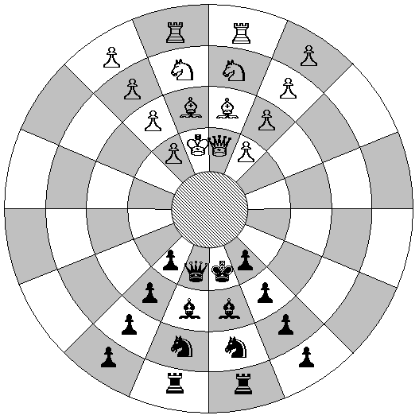
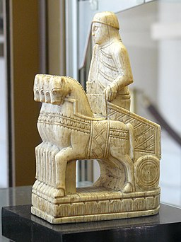
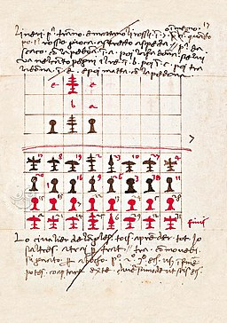
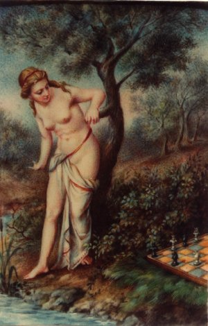
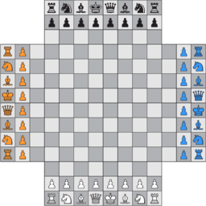
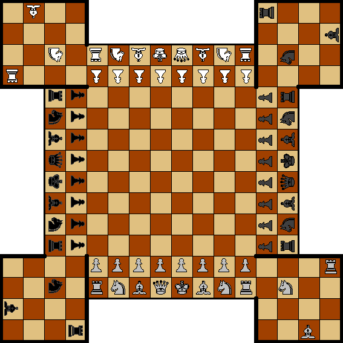
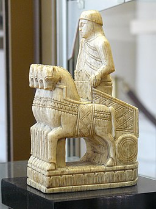
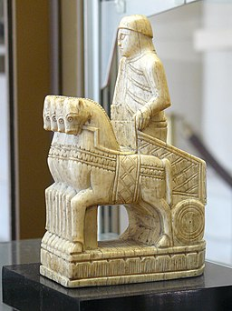

This section does not want to be, by far, an account of the history of chess, leaving out, for example,
the easternmost variations that I personally do not know. The intention is to record all historical
references which, in one way or another, have had some influence on the design of C'escacs,
accompanying them with some interesting historical data.
primitive chess
The origin of chess is unknown, but the game of Chaturanga in India, mentioned in the Mahābhārata,
is
generally considered to be the earliest precursor. Chaturanga is recorded to have been played
as early as the 6th century.
Considering that, after the time of Alexander the Great, the Greeks maintained close contact
with India for several centuries, the silence of Greek writers on the existence of chess is
considered evidence of the non-existence of chess in those times.
As Daniel Willard Fiske (1831-1904) pointed out:
Before the 7th century CE, the existence of chess in any country cannot be proved with the slightest
documentary or reliable evidence. Beyond that date, all is impenetrable darkness.
Daniel Willard Fiske
The Nation, New York.
7.6.1900, page 436
Chaturanga
Chaturanga
(चतुरङ्ग) is a game with origins in the Gupta Empire, and would come to mean four armies
(literally, having four members, chaturanga - चतुरङ्ग caturaṅga, catuḥ: "four"; anga:
"arms"),
beeing hasty-ashwa-ratha-padatam (elephants-horses-carts-foot soldiers) the
classic formation of the armies of India, as described by the
Akshauhini
en el Mahabharata.
The oldest known reference dates from the 6th century AD, although the represented armies correspond
to
the time of Alexander the Great and the Maurya Empire, between the 4th century BC and the 2nd
century BC.
There is also a Chinese chess (Xiangqi, 象棋) with representations which correspond to the 1st century
BC.
Interestingly, the oldest references are not directly from the
Chaturanga, but to the arrival as Shatranj
to Persia from India, and some more diffuse texts from China.
Starting positions in the Chaturanga.
The boxes on the board were of a single color.
The Rajah was positioned on the board to the right of each player, so that the
Rajahs of the two opponents were not facing each other.
The move was equivalent to the King's move in modern chess, and it is possible
that there was a special initial move.
The Mantri (Advisor) had no movement all over the board, since it only
moved one square diagonally. He thus only moved for what on a modern board would be
the white squares, beeing a colorbounded figure.
Los Padàti / Bhata / Sainik (all three names are valid),
would have a movement equivalent to the current pawns , but without the starting
double movement; we have no information regarding the promotion, but it was probably
determined by the square that was reached.
Los Ashva / Ashwa (Horses / Knights); they would have the same movement as
the Knight of current chess.
There is no certainty of the movement of the Ratha (Chariot),
but it most likely coincided with the current Rook of chess.
Elephant move in Burmese chess (Sittuyin)
Thanks to: Boedawgyi, CC BY-SA 3.0
via Wikimedia Commons
In the case of the Gaja (Elephants) the exact movement is unknown, existing
different theories; I personally subscribe to the likelihood of the move matching
that which has persisted in some Southeast Asian chess
and also Japanese Shogi silver general
already described by al-Biruni around 1030 in his book India.
The movement of two squares diagonally occurs in the Nauca del
Chaturaji, where its weakness
is obvious. This move carried over to Persian Chatrang
and Chinese Xiangqi, but the elephant in India is unlikely to have been
represented with such a weak piece, as can be seen in the
Indian variant of modern chess.
The movement of the Ratha (Chariot) is also not completely certain, although it is thought
that the movement corresponds exactly to the movement of the modern Rook. We have multiple
games with horizontal and vertical movements, as in the Indian Xaturaji, in the Arabic Shatranj, and in many
other games in different places: in the 飛車hisha
("flying chariot") of the Japanese shōgi (将棋), in the 车chariot of the Chinese Xiangqi (象棋), or in the Viking Hnefatafl;
moreover, although the rules have not come down to us, it seems that this movement would also exist
in the Ludus latrunculorum of the Romans, or even in the
Petteia of the Greeks.
It is also possible that the Xaturanga evolved, with more than one version, or variants,
existing in each area, and the success and standardisation of the Shatranj in the next Islamic world could be seen as just another variant.
Thus it was probably the reputation of the Persian origin of Shatranj that left
Xaturanga forgotten; the Islamic era in India began with the first colonies in the 8th
century and sultanates from the 10th century onwards, but the important Mughal era did not begin
until the 16th century, and from the 17th century onwards the influence of Western chess in India
was already evident.
Chaturaji
Starting position of the Chaturaji;
the allies are positioned in opposite corners.
Chaturaji
means four rajahs,
and is an evolution of the Chaturanga in India itself. It was a game that
incorporated dice that the player rolled to determine which piece to move. It
incorporates the Nauca (Boat), which jumps two squares diagonally,
so the squares it can reach are very limited. In this game the Gaja
(Elephant) moves like the current rook, representing the most powerful piece.
The piece to be moved was determined with a long four-sided die:
Pedàti (Pawn) or Rajah
Nauca (Boat)
Ashva (Knight)
Gaja (Elephant)
You can also use a four-sided tetrahedral die, or if you only have a cubic die
(hexahedron) use the value five equivalent to the value one, and six equivalent to
the value four.
Valuation of the pieces was:
Pedàti (Pawn): 1
Nauca (Boat): 2
Ashva (Knight): 3
Gaja (Elefante): 4
Rajah: 5
While Chaturanga would mean four armies: infantry, cavalry, chariots and elephants,
Chaturaji means four rajahs, a way of saying four players. Chess with more
than two players have a tendency to degenerate, losing the strategic component to prevail
diplomacy between players, unbalancing the game. But we remember that Chaturaji is a game
with a large component of chance, and, moreover, in Chaturaji it seems that the players
form two pairs, playing one pair against the other. In any case, it may be a game inspired by
chess and with certain connections, but it cannot be considered chess, as we could say of
Chaturanga or other variants that we will mention here.
Chaturaji rules
The aim is not to capture the enemy Rajah, which is just another piece on the board, but to
score points by capturing pieces; the exception is the rule that the game is won by the player
who captures the Rajahs of the other three players, scoring the equivalent of the three whole
navies, 54 points, since each navy is valued at 18 points; This victory is called
Chaturaji.
The order of player turns is clockwise, and fronted players are allied. Each player moves two
pieces each turn by rolling one die twice or by rolling two dice simultaneously. When both dice
indicate the same piece, the same piece may be moved twice, or if two such pieces are available
then two different pieces of that type may be moved. If movement of the dice indicated piece is
impossible, or, if the player doesn't want to move it, as the player is not obliged to move,
then the full turn is lost.
Note that when playing with two dices and that case arises on the second throw, the
first move had already been done, and it is not undone; so, It is different to play
with one die or with two. It should also be noted that allied pieces can be captured,
but not your own.
The game ends when there are no pieces left in play for the opposing players, but it can also
end when all the players agree to end the game. At the end of the game, the points are counted.
Other rules:
Shatpada (six steps): pawn promotion
If the conditions arise, a pawn that reaches the last square would promote to the type of
piece that would be positioned on that column on the initial setup (of your own column or your
ally's column).
When a pawn reaches the final rank but may not promote, then the pawn stays as a pawn on the
square on the final row. As soon as he may promote, the pawn is changed into the respective
piece. In the mean time, the pawn can be taken.
When a player owns three or four pawns, a pawn may not promote.
When a player has one or two pawns, he may promote to Knight or Elephant.
Only when a player possesses a single pawn and the Rajah, and at most the Boat
but no other pieces, may he promote to Ship, or a second Rajah.
As an exception, a player without Rajah can always promote to Rajah when a pawn
reaches the last row of a Rajah's column.
Vrihannauka: Boat triumph
When a boat moves such that a 2×2 square filled with boats is formed,
it captures all three boats of the other players.
Rajah capture
If a player loses his Rajah he cannot move any pieces, except for pawns. His pieces
remain on the board and can be taken.
The partner can choose to exchange Rajahs and rescue him by replacing him.
Pawns of a player who had lost its Rajah can't capture a Rajah.
When capturing an enemy Rajah, if the partner's Rajah has been captured
by that enemy army, it can be demanded the Rajah's exchange, and then both
Rajahs are returned to its starting position, or to an adjacent one if it is
occupied.
Otherwise, the player who captures the last enemy Rajah, if his partner's
Rajah has also been captured, will take control over the ally army to
defeat the frozen enemies using both armies.
Sinhasana
Whoever moves a Rajah to enter the original square of another Rajah is said to
have gained a sinhasana. If a player gains a sinhasana on the allied player's
throne (player whose pieces are opposite), both allies take control of both armies.
sinhasana rules on an enemy throne are related to gambling.
Cacacashta
When Rajah is left without its army it is neither victory nor a defeat.
It was a gambling game with stakes, and some of the rules were complicated, we don't know them
well and they might even have had versions in different places. Either way, we can add some
adapted rules to play with points:
Point tally: Pairs can be kept or changed over a series of different games, keeping
the points earned by each player, but it must be noted that a typical series of games would
be a series of four games, without changing pairs.
Cacacashta point tally: The cacacashta situation (lonely Rajah)
means that no one counts the points of the captured pieces to that army (player) in the game,
it's like a draw with that player; the Rajah is removed from board and pieces are
returned to the player (they do not count), who also returns any piece which would had
captured (they also do not count). Note that the allied can force the situation capturing
the last allied piece.
Sinhasana on an enemy throne: Gaining a sinhasana on an enemy throne
doubles the value of its Rajah (10 points) if captured while the throne remains occupied,
but capturing the enemy Rajah on his throne by gaining a sinhasana, i.e.
capturing the enemy Rajah in his initial position with one's own Rajah, is even
more valuable, and quadruples its value (20 points). Note that if the Rajah is
rescued in any way, with the rescued Rajah the advantages of sinhasana are lost;
this is not the case in the promotion of a pawn, for in that case a new Rajah is
appointed.
End game by Rajah capturing: When both enemy Rajahs have been captured
and also all its pawns, and thus both enemy armies are definitly frozen, the number of final
turns can be limited, for example to five turns, that is to say ten moves for each remainding
player; this rule is to avoid a never-ending end.
The Sanskrit word चतुरङ्ग (chaturanga) in Middle Persian or Pahlavi, loses the 'u' per
syncopation and the final 'a' by apocope (chatrang: چترنگ). For this reason, the
name Chatrang is usually reserved for the Persian version, which in
turn gave rise to the Arabic version, the Shatranj.
There is a text
in Middle Persian (Pahlavi)Explanation
of Chess and arrangement of Vin-Artakhshir
concerned with the earliest story of the invention
of the games of chess and backgammon in the
sixth century, during the rule of the great
Sasanian king of kings, Khosrow I (501-579 CE, king from 531).
In addition, other Middle Persian texts mention the game of chess and
backgammon in a context that makes it clear that it was part of the courtly
education. Khusro ud Rēdag (Khusro and the Page)
refers to to the same period, but
Kārnāmag ī Ardaxšīr ī Pābagān
(Book of the deeds of Ardashir, son of Pabag) references them
at the time of the creation of the Sassanid empire (beginning of the
third century), but this text, however, appears to be a late compilation
dated on the seventh century, probably during the reign of Khosrow II.
The text, well known for its later inclusion in the
Shahnameh,
the national epic of Persia, written and compiled by
Ferdowsi around
the year 1000,
explains the arrival of Chatrang from India as an oriental tale,
although it reserves the creation of Nêw-Ardaxshîr, which soon
gave rise to Nard, which in turn was later transmitted to India
and is the precedent of Backgammon. The latest dating of the
original text places it at around 600 CE, coinciding with the earliest
archaeological evidence of chess in Iran, an elephant cut in black stone
dated to the end of the 6th or 7th century. A brief
adapted translation of the text,
got from http://history.chess.free.fr
is copied here:
Dêwisharm (Divsaram), an Indian king identified to
Deva
S´arvavarman, a king
of Kanauj from the Maukhari dynasty, by Renate Syed,
professor of Sanskrit sent its vizier, Tâtarîtos
(Takhtritus), to
Khosrow I
Anôshag-ruwân
(immortal soul), Shâh of Persia, with many presents:
A set of 16 emerald and 16 ruby pieces, 90 elephants and 1200 camels charged with
gold, silver, jewels, pearls and rainment.
A challenge accompanied this caravan:
As your name is King of the Kings, that means that your wise men should be wiser
than ours. Either you discover the secrets of this game, or you pays tribute.
Khosrow asked for few days to solve the enigma. The last day,
Bozorgmehr rose and says to his king:
I shall solve this game easily and secure revenue and tribute from Dêwisharm
and I shall prepare another thing and shall send it to Dêwisharm which he
shall not be able to solve and I shall exact double the tribute from him;
and be you sure of this that you deserve the emperorship, and the wise men
here are wiser than those of Dêwisharm.
He called Tâtarîtos before him and said:
Dêwisharm made this game of chess like war. He made the Kings (Shâh)
like two overlords, the Ministers (Mâdayâr or Rox) essential for the
left and the right flanks, the General (Frazên) to resemble the chief of the
warriors, the Elephant (Pîl) to resemble the chieftain protecting the rear,
the Horse (Asp) to resemble the chief of the horsemen, and the Pawns
(Payâdag) to resemble the foot-soldiers on the battlefront.
Then Bozorgmehr proposed to the Khosrow to send to Dêwisharm a
game of his invention, the Nêw-Ardaxshîr, brave-Ardashir thus named
in the honor of Ardashir, the founder of the dynasty. This game used
15 black and 15 white pieces on a table inspired by the movement of the stars and
the cycle of the days.
According to al-Tha'alibi, when the Arabs entered
Ctesiphon, the capital of the Sassanid empire of Persia, they found
some ruby and emerald chess pieces that belonged to Khosrow II.
The text is to be understood in a context in which backgammon is seen as a superior
game: while the game of chess is a game linkened to battle, backgammon is based on
the throw of the dice, thus based on one’s fate. According to some of the
traditions of Zoroastrianism in the Sasanian period, fate dominated and controlled
human life. An annotated translation can be found at:
On the Explanation of Chess and Backgammon.
In the text, the Persians have to guess the rules of the game, which Bozorgmehr
succeeds, and then he won three games against Tâtarîtos. The great symmetry
of the movements of the pieces (see the drawing attached to the
Shatranj) makes me personally think of some
alteration of the chaturanga rules, and I am thinking in particular of the movements
of the elephant; It is true that the movement of the chariot is not
known either, but the conjecture that the movement was maintained is very solid.
Persia, just before the beginning of the reign of Khosrow I, welcomed the
scholars of the Platonic Academy (Neoplatonic Academy), which was
closed by Justinian I in 529. Throughout the Middle Ages Persian mathematics
were an important contribution within the Islamic world, and throughout the West,
but it is also true that at the time theological and transcendent meanings were
sought in symmetries and geometry.
Spread of Persian Chatrang in the West
Early 12th century ivory boat, Volkovysk, Belarus.
Belarus Museum of Belarusian Art, Minsk.
The name of the elephant (Fil) has been preserved in Catalan as Alfil,
but also in Spanish, Italian, Turkish and Persian; in Russian the word слон
(elephant) is used directly. In addition, the name Ferz has been preserved
in Russian (Ферзь) for the Queen, and as vezér in Hungarian.
These philological roots in Russian words, directly linked to Persian, together with other
archaeological evidence, are considered proof of the Persian connection of chess in Eastern
Europe, specifically among the Slavs.
In Russian the name Elephant (слон) is kept for the bishop, and
interestingly since ancient times the name Ладья (ship), instead of
the original version chariot, is used for rooks, which could be justified by
the Varangian influence and the importance of ships for this culture. Nevertheless it
should be noted that the ship type does not refer to a Viking drakkar, but to a
Slavic vessel.
Chess was called zaquitrion in the Eastern
Roman empire, a name that philological evidence has established, apparently with certainty,
as a Hellenisation of the Persian Chatrang rather than the Arabic Shatranj.
This Persian origin of the word Zaquitrion may allow us to date the
knowledge of the game in Byzantium probably earlier than 661 CE, when in Persia the
invaders imposed Arabic as a language on their subjects throughout the Umayyad empire;
although Middle Persian proved to be very durable, if it had occurred at a later date,
for example, if it was already in the Abbasid dynasty (750 CE), it would be natural
to observe a provenance from Arabic, particularly considering that the Arabs quickly
appropriated the game, and the importance they attached to chess.
Shatranj
The moves of the pieces of the Shatranj were complementary,
if
the Shah (King) and the Sarbaz (Pawn) are excluded.
The Shatranj
(Arabic: شطرنج; Persian: شترنج) was the evolution of the Chaturanga in Persia, and from
there it reached the Arab world around the year 530, a hundred years before the
Muslim conquest of Persia. It is documented by means of
references in Arabic from the medieval period, but it is unknown if, as the Arabic documentation
assures, it coincides exactly with the version that was played in Persia.
The game, unlike the Indian Chaturanga, is well documented.
The board continues to be monocolor.
The pieces were: Shah (equivalent to king),
Firz (Ferz, vizier, in Persian, medieval Queen),
Fil (elephant, in Persian, early medieval Comes, Curvus or
Bishop. It also took the name of Archer, and in other countries
Hunter or it preserved the name Al-fil), Asb (Faras)
(horse, in Persian, in many medieval countries took the name of Knight),
Ruhk (chariot, in Persian, modern Rook) and Sarbaz (soldier,
in Persian, later translated into arab as Baidaq, modern Pawn,
without initial double move, and which, reaching the eighth row, promoted
Ferz).
The Shahs are positioned facing each other, unlike the initial position
of the Chaturanga, and, of course, there was no castling.
Therefore, the Firz (Ferz, vizier, in Persian), who play
colorbounded,
cannot capture each other; move one square diagonally.
The Phil (elephant, in Persian) jumps two positions diagonally
in either direction. Same as the Nauca (Boat) of the Chaturaji.
In addition to be colourbounded, the squares it could reach were even more
limited, only one eighth of the board. More over, the reachable squares of the four
Elephants in the game were disjunct, so that one's own Elephants were
complementary, reaching between them only one quarter of the board, and it was not
possible to capture an opponent's Elephant with an Elephant.
The end of the game would occur in three different cases:
Leaving the opponent with no possible moves (stalemate) was also a
victory; if you think stalemate as a capturing the Shah
approach, if a shah in stalemate position moves, it will be
captured.
Stripping the Shah: Capturing all the opponent's pieces, apart from
the Shah, meant victory, except if the opponent could capture the last
opponent's piece on the next move, in which case the game ended in a draw.
In the Shatranj problems were defined to be solved (mansūbātمَنصوبة), and also opening positions (tabiya,
تَعْبِيَة), where, despite not indicating the way to reach it,
the different advantages and moves from the position were studied, which the players
tried to imitate. The valuation of the pieces was also estimated, calculated
symbolically in dírhams (darāhim), and categories were established
between the chess players, and the advantage that a player of a higher category had
to concede when playing with a player of a lower category; in fact, similar
handicap rules were prevalent in Western chess in the
Romantic era of chess during the
18th and 19th centuries.
The great players were famous at court and many well-known scholars wrote books on
Shatranj during the Golden Age of Islam, at the time of the
Great Library of Baghdad
(the House of Wisdom), the first university in the
world which absorbed the Persian scholars of Gundeshapur, where we find such
important scholars as the historian
Al-Massudí Al-Massudi, born in Baghdad itself already in
the 10th century, and who mentions the different variants of Shatranj that
existed in his time. Different books were written about chess, studying the
tabiyatتعبية (chess problems) and
manṣūbātمَنْصُوبَة (openings), books that
have survived to the present day:
Kitāb al-Shiṭranj
(كتاب الشطرنج842) Book of Chess.
This is the oldest known book dealing with Shatranj, although
in China there is an earlier book dealing with Chinese chess, the
Xiangqi, written by Niu Sengru
(牛僧孺) (780 - 849) in the early 9th century.
Kitāb al-Shiṭranj al-Nisḥa al-Awala
(كتاب الشطرنج النسحة الاولة)
Chess, the first manuscript.
Kitāb al-Shiṭranj al-Nisḥa ath-Thānīa
(كتاب الشطرنج النسحة الثانية)
Chess, the second manuscript. Book on chess strategy, common
chess openings, standard problems in middle game, annotated end games
and the first known description of the knight's tour problem.
Example of ShatranjMansuba (مَنصوبة):
Mansuba of Dilaram (9th century)
Legend has it that Dilaram, favourite of the grand vizier Murdaoui,
was witnessing a game in which her husband had committed the folly of betting
on his favourite wife. Murdaoui was about to receive mate. Seeing the
position Dilaram whispered to her husband the winning variation:
The arrival of the Shatranj in Cordoba is attributed to
Ziryab
(أبو الحسن علي ابن نافعAbu l-Hasan Ali ibn Nafi), also known by the nickname
of Mirlo (spanish for Blackbird),
a freedman of black descent, who arrived in Algeciras in 822 CE. He came from the
court of Baghdad to reside at the court of Abderraman II of Córdoba (792-886).
He was a Muslim poet, musician, singer, aesthete and gastronome who introduced many
customs and fashions into the society of the time, many of which still persist today.
He also established the first music conservatory in the Islamic world, and perfected
the lute by adding a fifth string.
Although it cannot be confirmed with certainty that he was the protagonist of the
introduction of the Sharanj at the court of Córdoba, his great influence on
that court and, in general, on the society of the emirate, allows us to affirm this
without much room for error. He initiated them into the fashions and customs of
Baghdadi civilisation, which they accepted as rules of social and urban conduct,
even in such intimate aspects as hygiene and cleanliness and others linked to their
own morals and language. Eastern forms of protocol were introduced, and society
itself changed many customs in line with the new norms and fashions.
Early Shatranj variants
The historian al-Mas'ûdî (المسعودي), dead in
956, composed the Murūj aḏ-Ḏahab wa-Maʿādin al-Jawhar
(مُرُوج ٱلذَّهَب وَمَعَادِن ٱلْجَوْهَرMeadows of Gold and Mines of Gems). Among other things, this text described
five variants of Shatranj:
Oblong Shatranj (al-Mustatîla),
Complete Shatranj (at-Tâmma),
Byzantine Shatranj (ar-Rûmîya),
Celestial Shatranj (al-Falakîya) and
Limb Shatranj (al-Jawârhîya).
Today we know very little about the latter, the Limb Shatranj, and we do not
know the details, but in any case, it seems to be unrelated to what we understand
today as chess, although neither is the Celestial shatranj.
This was a Shatranj played with dice, moving a piece according to
the type of piece determined by the value of the die (6=Shah, 5=Firz,
4=Elephant, 3=Horse, 2=Roc, 1=Peon) on a rectangular board consisting
of 16×4 squares, which often appeared behind the board game of Nard
(backgammon). We note that, indeed, chess in the Middle Ages was a game
of chance and gambling.
There were several alternative initial setup positions. In case of check,
if the die did not allow the Shah to move, the player lost the
turn, and the game was only lost when the Shah was captured, or
all pieces except the Shah were captured.
This Shatranj used a board of 10×10 squares, adding two pieces to
each player. It is the oldest known decimal chess (on a 10×10 board).
Two variants are recorded:
Incorporating a piece (four, two each player) which he calls
Dabbābah (war machine), which in this case had the same moves
as the Shah.
Incorporating a piece called Camel (four, two each player) which
in this case seems to move by jumping orthogonally to the third square,
complementing the diagonal movement of the Elephants. This
movement is not as limiting as that of the Elephant, and allows
it to reach a quarter of the squares, so that the four disjointed
Camels would reach the whole board, but without being able to
capture each other.
This Shatrang at-Tâmma had some different rules from the
ortodoxShatranj:
The Pawn promotes to a Ferz, but if the player has not yet lost
its Ferz>, the extant Ferz is seized by the opponent.
If a Shah successes to reach the starting square of the opposing
Shah, the player obtains an half-victory.
A bare Shah is not losing. He must continue to play.
The Dabbābah piece appears in different variants
throughout history, with different movements.
It is also the case that the Camel appears in
different variants throughout history, but its movement is typically
different from this one, while this movement is sometimes linked to
the Dabbābah, leaving for the Camel a movement similar
to the Horse (Knight), but more elongated (3×1 and 1×3
instead of 2×1 and 1×2).
Round Shatranj:
Shatranj Al-Muddawara

Al-Muddawara (Zaquitrion).
Image: Dogface, CC BY-SA 3.0,
via Wikimedia Commons
Circular chess has to be understood simply as a
Shatranj played on a circular board.
The Arabs called it Shatranj ar-Rumiya (Byzantine chess) or
Shatranj al-Muddawara (circular chess), and it consisted of
64 squares, organised in four concentric rings with 16 squares each. Only
two rules need to be considered, due to the circular topology of the board:
There are no pawn promotion. Some pawns rotate clockwise, others
counterclockwise. It seems reasonable to think that the pawns will have
some mark or a distinct shape to indicate the direction of rotation.
Two opposing pawns of the same player, placed on
the same ring, consecutive squares and opposite rotation direction,
can be removed by the opponent on the next turn, without counting as
a move.
It may be noted, as a curiosity, that one player's Firz can capture
the opponent's Firz, since, if the board were checkered, both
Firzs would be on a square of the same colour. This is different
from all other Shatranj variants, in which the players' Firzs
are always positioned on squares that would be of different colours on a
chequered board.
Documents in the British Library and elsewhere suggest that circular chess
was played in Persia as early as the 10th century CE, and other references
are found in India, and later, in Europe. There are also references that
state that the shape of the pieces was different from the usual
Shatranj ones, but there is no record of the shapes; probably the
pawns would have had some distinctive feature to know in which direction
they moved, since there are pawns in play rotating clockwise, and others
counterclockwise.
Although Forbes and Murray mention it as a diagram appearing
in a 13th century English manuscript, preserved in London
in the British Library (Cotton MS Cleopatra B IX), it
should be noted that the Libro
del ajedrez, dados y tablas of Alfonso X of Castile,
written in the 13th century, does not mention circular chess; it can be
deduced that at least then it was not very relevant, neither to the Iberian
peninsula, nor to the Arab scholars, who were the main source of the
manuscript of Alfonso X of Castile, and of whom we do not have many
references either.
However, it should also be noted that there is also no reference to
oblong chess, despite devoting
a chapter to dice games, and another to backgammon related games, which
often accompanied oblong chess on the reverse.
Ibn al-Khatib, a poet, writer, historian, philosopher and politician
from Granada who lived in the 14th century, with a family of Yemeni origin
who arrived in al-Andalus in the 9th century, documents the creation of
circular chess, which he claims is traced to a manuscript from the year 618
found in Istanbul, which describes a round, circular chess set called
Rumi, the invention of which he attributes to
Abu Ali Ibn Rashiq al-Murci (d. 694). The term Rumi comes from
the word the Arabs used to designate the territories of the Roman Empire, and
the circular chess is often mentioned as Shatranj ar-Rumiya
(Byzantine chess) in Arabic works.
The earliest and most valid reference is that of Al-Massudi
(10th century) in his encyclopaedic work on world history
Meadows of Gold and Mines of Gems, and it may be relevant that
he called it Shatranj ar-Rumiya (Byzantine chess), although there
is no other historical evidence linking the name to Byzantium, other than the
name given by the Arabs and some much later Arabic legend.
Interest in the game revived in the 19th century, when in 1885
George Hope Verney described it in his book Chess Eccentricities,
together with variants for three and four players invented by himself.
It is also mentioned in the book
The sports and pastimes of
the people of England (1833, Joseph Strutt. Book IV,
Chapter II), referring to the 13th century English manuscript
preserved in London in the British Library
(Cotton MS, Cleopatra B IX).
In 1983 the English writer Dave Reynolds set out to revive it with
the current rules of chess; he built a board and presented it in a pub in
Lincoln (England), where it was a hit with the local players.
The modern version of circular chess was born, and
in 1996 the Circular Chess Society was founded to organise a tournament
as a means of spreading and popularising it.
Modern version of circular chess
Circular chess.
Image: Dogface, CC BY-SA 3.0,
via Wikimedia Commons
Circular chess gives the Shatranj greater dynamism, providing
more power to the rooks, but unfortunately, losing a little
power the knights. It is not an optimal solution, and for this
reason it has not stood the test of time, as the complexity of the
circular chessboard does not provide sufficient improvements: it forces
the creation of two fronts, but it boxes the pieces more, delimiting
much more their area of influence, except for the rooks. It increases
the power of the rooks, but slightly reduces that of the knight (¼),
and the mobility of the bishop, making the game more unbalanced. In
addition, the absence of corners makes checkmate more difficult to
achieve, so that probably most games ended up with the kingstripped, or in a draw, a much less artistic ending than
in the traditional Shatranj.
The modern version of the circular Shatranj is circular
chess, incorporating the movement of the modern Bishop and
Queen, but, unfortunately, the Bishop's movement is
greatly impaired by the change from a square checkerboard to the circular
version. The Queen, consequently, also has a disadvantage in its
diagonal moves, but it has already been said that the orthogonal moves
of the Rooks gain in power, and therefore also that of the
Queen is compensated; we can think of the situation with three
pieces of orthogonal move each player, in a checkerboard that has only
four rows, with the diminished power of the Knight and Bishop.
This is not to say that it is not a perfectly playable game, moreover, with
the advantage that there are no great studies on openings, as in orthodox
chess, allowing a pleasant game for practising chess without the
considerations linked to the studied openings, and with a different
approach, which is why it is practised in many clubs, particularly in
England. But probably the behaviour is preferable as Shatranj rather
than modern chess.
Turning the circular chess hobby into a competition means going
back to the study of openings, and then the more relaxed condition
of the game is lost.
In addition to incorporating the modern Bishop and Queen move,
there are some additional rules to take into consideration in the modern
version of circular chess:
The initial position of the pieces changes with respect to the traditional
version, so that the two kings face each other (see the difference
in the circular chess picture with respect to that of the
Al-Muddawara).
Although the double movement of the pawns is incorporated, there is no
en passant capture, nor is there castling.
The rules of modern chess apply to the end of the game: a stalemate is a
draw, and there is no victory if the King is left naked, with
no pieces.
Pawns are promoted after moving six squares from their starting position
to the square immediately before the opponent's starting line.
The rule of circular Shatranj that allows opposing pawns
of the same player to be removed is no longer necessary, since the case
cannot happen.
Announcing the check is not compulsory, and it is allowed to capture the
opposing king if he does not retreat from a check position, winning the game.
The modern version incorporates the queen power: there are only four rings, and
three orthogonal move pieces for each player. It can also be criticised that
modern long-range diagonal moves are not clearly visualised on the circular board,
and may not be obvious.
The fondness for modern circular chess lies in the great differences, both
in the openings, which are not studied, and in the endgames. The basic endgames
in circular chess are: king and queen; king, rook and minor piece or king and
three minor pieces against king. The endgame king and pawn against king always wins,
provided that the king cannot capture the pawn before it promotes or is defended.
Checkmate is more difficult to achieve, and many games that would be lost in
orthodox chess because of the difference in material end in a draw.
Although not much information remains, partly because it was a game intended
to be guided by some erudite of the time with some knowledge of
astrology, it seems that the game called Escaques detailed by
Alfonso X in the Libro de los juegos: acedrex, dados e tablas
of 1283 could almost be the transcription of al-Falakîya Shatranj, a
game for seven players on a circular board divided into seven concentric
rings, each one for one of the celestial bodies (in order: Moon, Mercury,
Venus, Sun, Mars, Jupiter, Saturn), the innermost one for the Moon, and each
of the rings divided into small sectors as squares. But Alfonso X also
indicates that he does not leave the complete information, because it should
only be available to wise men.
The different rings did not have the same number of squares, the numbers being,
in order from the inside: 12, 24, 36, 48, 60, 72 and 84. In addition, the
innermost circle, inside the moon ring, is divided into four, for the four
elements: fire, air, water and earth. The seven tokens, one for each celestial
body, had stipulated colour and shape, for example, for the Moon, the
token was to be represented by A woman dressed in white, and with her hands
above her head holding the figure of the moon, Mars a classical
soldier, or Venus a woman with a mirror and a comb.
It was a gambling game very unrelated to Shatranj, despite
bearing the name, but was related to playful astrological divination.
Each player started with twelve points, and the game was
played with a seven-sided die that determined which star had to move, and
another die indicating how many moves had to be made. The resulting position
of the celestial body in relation to the other celestial bodies determined,
according to rules, the winnings or losses; these rules are largely
determined by the astrology of Claudius Ptolemy (100 - 170 CE).
A seven-sided die usually refers to a long die, or a
teetotum, eight sided, discarding one
of the values.
Current Ethiopian chess (Senterej)
Nowadays there is Ethiopian chess (Senterej) which is traditionally played in
Ethiopia and Eritrea. This chess retains all the moves of Shatranj, although
it is characterised by initial moves of the pieces made by the players,
indeterminate in number and not necessarily alternating, moves that end with the
first capture. The artistic sense of the game is valued, considering a mate
made with a Ferz or an Elephant (Fil) to be more respectable,
and even more admirable if it is made with a Pawn; mates with a Knight
or Rook are considered unartistic.
Western Chess Evolution
Western chess is particularly distinguished by
the chequered pattern.
Image: Nevit Dilmen, Public domain via Wikimedia Commons
The most important differences between medieval Western chess and Shatranj, apart from
some rules that were modified over the centuries, were the appearance of the two-coloured
chessboard, and the return to pieces with figurative representations
that had been the usual form before Islam, and from the 11th and 12th centuries onwards were
recovered in the West.
The first reference to the two-coloured checkerboard is curiously also the first written
reference to Western chess, the document, written in Latin,
Versus de scachis, which only advises it
as a means of making the game easier for the players.
We also note the change of name for some pieces, although maintaining their original
movements: the queen is named, the calvus or curvus for the elephant,
and the rook loses its meaning as a war chariot, a piece of junk that no
longer makes sense in the armies of the time. But the movements of the Shatranj pieces,
even if renamed, will remain the same, although there are also some changes in the rules.
The changes in the rules were subtle: the promotion of the pawns and the first move
of some pieces (the pawns, the queen and the king), which also had
variations depending on the geographical location. The first differentiated move has been
maintained for the pawns, became meaningless for the queen when she changed
her moves, and for the king it became castling.
Some rules had to wait until the 17th century
to be standardised, and even some until the creation of the world championships in the 19th century.
Castling was not defined until the
mid-17th century, and did not become fully standardised until the 19th century. The rules
for the promotion of pawns were also not standardised until the 19th century.
The stalemate began to be considered a draw in Europe from the 13th century onwards,
slowly spreading throughout Europe, becoming almost general after the 15th century, with
the adoption of the modern bishop and queen, but it was not accepted in England until the
19th century. As for considering the case of the naked king, without pieces, as a
defeat, it was maintained until after the 15th century, already with the presence of the
modern bishop and queen.
Between 600 CE and before 712 CE:
The oldest chess pieces ever found are the
pieces from Afrasiab,
near Samarkand, Uzbekistan. They are preserved in the
Afrasiab Museum in Samarkand.
This location is thought to be the origin of western chess. Persian
Shatranj forms can be seen before Islamic domination.
In the 8th century the spread of chess by the Khazars, and later via the
Varangians, to Kievan Rus, before the Islamic domination of Persia, can be confirmed
by the archaeological presence in the Khazar fortification of Sarkel, now under
the Don River dam reservoir, near the mouth of the Sea of Azov, a sea connected to
the Black Sea. Sarkel was close to the present-day city of Rostov, Russia,
and it had strong links with the Eastern Roman Empire.
The photograph shows an ivory elephant found in the
Khazar fortification of Sarkel, dated between the 8th and 10th centuries.
It is now in the Hermitage Museum in St Petersburg, Russia.
In the lands of Islamic rule the pieces of the Shatranj were
geometric, and did not depict human figures. Despite the acceptance of
the other religions of the book, others, such as Zoroastrianism
or Buddhism, were not initially accepted. Many chess sets of this
period are of Islamic origin, and in Spain even Mozarabic (Christian
dominated) from the peninsula.
9th‑10th century:
The bolos of San Genadio (Pañalba de Santiago, Lleón). Only four
pieces of bone associated with the saint have been preserved.
A history of deep Spain: We can read the story in
Las piezas de ajedrez de San
Genadio
explained by Miguel Ángel Nepomuceno
himself, the chess master who went to look for the pieces, already
mentioned in 1843 by the writer Enrique Gil y Carrasco, and
in several later references.
9th‑10th century:
The Venafro chessmen (Italy) probably bears witness to the Arab
presence in Venafrum, which was occupied between the 9th and 10th
centuries by the troops of the Amir of Bari. The pieces are made of bone.
10th century:
The chessmen from the ex-collegiate church
of San Pere d'Àger, made of rock crystal.
In the 11th century, the ensemble consisted of 96 pieces, and in the
16th century only 44 were preserved. Today only 29 remain. Of these,
19 pieces are preserved in the
Diocesan Museum of Lleida,
but the other 10 are in the National Museum of Kuwait. They were
documented in the early 19th century by Father
Jaime Villanueva Astengo,
and this made their archaeological recovery and conservation possible.
It seems that these same pieces appear in the will of
Arsenda of Àger in 1068, in which she leaves chess to
her husband, and a few years later in an inventory of
Arnau Mir de Tost,
lord of Àger, and husband of Arsenda of Àger, thirteen
silver boards, three sets of ivory and three sets of glass are
listed.
It is thought that these pieces may have been manufactured in
Egypt, but Cordoba is now also considered as a
possible workshop, in Medina
Azahara, rather than Egypt, but in any case, they certainly
came through Cordoba. More information can be read in the article
on the website http://history.chess.free.fr.
Similar pieces, but in smaller numbers, have been found elsewhere
in Spain: San Millán de la Cogolla (La Rioja) and San Rosendo de
Celanova (Orense, Galicia).
10th century:
The pieces from the cathedral of Roda de Isábena in the
Ribagorza region were documented at the beginning of the 19th
century by Father Jaime Villanueva
Astengo:
A bag with several pieces of glass, about forty, large
and small, inside the chest called the chest of Saint
Valero,
and he identifies them as pieces from the ancient game of
chess, similar to those from Àger. The dating is not
known, as these pieces have disappeared, but from the description
we can think that they are similar to those from Àger. It is
thought that they appear in an inventory of the cathedral dated
to the 12th century, but they are not explicitly mentioned as
chess pieces.
10th century:
Fatimid chess (from medieval Egypt) from Celanova or
San Rosendo chess. Preserved in the museum of
the cathedral of Orense, these are pieces of rock
crystal from San Miguel de Celanova, with 8
pieces from the 10th century: a rook, two bishops,
two knights and three pawns. They belong to the so-called
Treasure of San Rosendo, apparently taken from
the primitive tomb of the Galician saint in Celanova.
For many years they were probably considered to be
simple carved glass. Nowadays, Cordoba is also considered
to be the
possible origin of the pieces,
a workshop in Medina Azahara, rather than Egypt.
10th century:
In the Monastery of San Millán de Yuso,
San Millán de la Cogolla (La Rioja), the
Chest of San Felices includes three pieces
of rock-crystal in the shape of Arabic chess pieces
(Shatranj). In this case it seems that the
chess pieces were only appreciated as decorative
pieces by the kings of Navarre.
Year 1008:
Inventory of the church of the abbey of Ripoll,
drawn up in the year 1008, in which a set of 28
scacos cristallinos is reported.
Unfortunately, the chess pieces have not survived
to the present day.
Year 1010: In the testament of
Ermengol I, Count of Urgell,
founder of the House of Urgell, there is the first reference
to the possession of a chess set in Europe, where donates it to the
abbey of Saint-Gilles-du-Gard de Languedoc. The will was made
on the occasion of the campaign against Cordoba by the Catalan counts.
Unfortunately, the chess pieces have not survived to the present day.
Fifty years later, Ermesinde of Carcassonne, countess
consort of Barcelona, Girona and Osona, sister-in-law of
Armengol I of Urgel, widow of her elder brother,
Ramon Borrell, donated her chess pieces to the same
Languedoc church, as can be read in her will of 1058.
In Catalonia, several early references to chess games have been
found in wills and inventories, showing the spread of the game
in these lands, and the fondness for it among the nobility;
written references to chess in the rest of the Christian West
are not usually so early.
Between the late 9th and early 11th centuries:
Anglo-Scandinavian jet rook found under the 'Coach and Horses'
inn on Nessgate Street, York (UK). Together with the twin piece
found in the prehistoric flint mines of Grime's Graves in Norfolk,
they may show the early introduction of the game in England, but,
even so, this presence of two identical and unconnected individual
pieces could correspond to another game, for example, they could
be Hnefis (Kings) from Hnefatafl, but the Arabian rook-like shape
would be very unusual; remember that the Hnefi move is
the same as that of the chess rook.
This piece may remind us of King Canute's pieces, which would
correspond in date.
11th and 12th centuries:
Pieces inspired by Muslim Shatranj designs can also
be found in Europe, in some cases clearly the result of
commercial exchanges, such as the pieces from Osnabrück
(Germany), but in others of clearly local manufacture:
deer bones (Poland and Scandinavia), whale bones
(Witchampton, Dorset, UK) or narwhal bones (Scandinavia).
Unfortunately, there are no associated written documents,
as in the case of Catalonia.
From the 12th century onwards the chess pieces are mainly figurative,
instead of the abstract figures of the Shatranj. This trend seems to
have started mainly in Italy, which would suggest a Byzantine influence.
Later, pieces from the Isle of Lewis, and some
Russian, Scandinavian and
North German pieces.
11th century: An ivory bishop found in southern Italy;
the representation of the bishop in Italy at this time was Byzantine
in style, like an elephant.

Miguel Hermoso Cuesta, CC BY-SA 4.0
and Siren-Com, CC BY-SA 3.0 via Wikimedia Commons
11th century: The incorrectly named
Charlemagne chess, since in reality it
is almost 300 years after Charlemagne (crowned in the year 800).
The chess pieces are carved in ivory, dated to around 1080, as they are depicted
with military equipment that corresponds to the clashes between Normans and Byzantines
in Italy during the Byzantine–Norman Wars. They were probably made
in Salerno (Italy). It is part of the Treasury of Saint-Denis, which is currently
preserved in the Musée de la BnF, Paris.
12th century: Chess was transmitted by river routes through Ukraine and
Russia
via the northern Black and Caspian Seas. Ships are depicted in archaeological evidence,
as Ладья
(ship) is the Russian word for the chess Rook.
The photograph shows an ivory boat from the early 12th century, found in Vaukavisk,
Belarus. It
is now in the Belarusian Art Museum in Minsk.
British Museum, CC BY-SA 4.0, via Wikimedia Commons
12th century: The Lewis chessmen, walrus ivory pieces from the time of the
kingdom of Mann, which was dependent for vassalage on Norway. The figures of
bishops appear representing the old Fils, until then named as
crookeds,
counts or companions, and Berserkers or Guards appear
representing
the Rooks, instead of charriots; therefore elephants and charriots
no longer appear.
12th century: In Europe, some pieces still retained the
symbolic forms of the Islamic Shatranj, although the valuable ivory
pieces were soon adorned with carvings, often with Christian motifs.
The photograph shows a Rook found in Casals (Cazaux), a village in Occitania
(France) between Andorra and Toulouse. The piece has been dated to around the middle
of the 12th century. It is currently in the Musée du Louvre, Paris.
12th century: Luxury pieces with symbolic abstract forms of European
manufacture incorporate engravings, and the tendency is to represent the figurative
form of the piece. Over time, Islamic symbolism will be forgotten.
The photograph shows a bishop found in Scandinavia, dated 12th century.
In the 13th century the figures are generally
figurative, and it is difficult to find the abstract Islamic symbolic pieces
characteristic of the Shatranj.
In the first picture we can see a King, Game Piece in the Form of an Enthroned
King,
carved in fine pumice stone, dated 1200-1250. It was found in northern Germany, and is
now
preserved at the Met
(Metropolitan Museum of Art of New York, USA).
The second photograph shows a Queen (Regina) on horseback, carved
from walrus ivory, dated 1250-1350. It is now preserved in the
Statens historiska museers (Suècia).
It was found in the Swedish region of Västergötland - West Goth country - and
from there,
approaching the coast, you can see the Kattegat Channel and Denmark. It was the first
place in
the country to convert to Christianity, and two of Sweden's first royal dynasties were
from this
province. For most historians, Västergötland is the birthplace of the country.
Versus de
scachis: Beginning of western chess
The earliest known Western reference to chess is the Latin poem
Versus
de scachis, dated to around the year 1000,
late 10th or early 11th century. It was found on two manuscripts from
Einsiedeln Abbey Library (Switzerland).
The original text can be read from wikisource,
and its importance was highlighted by Gamer, Helena M.The Earliest Evidence
of Chess in Western Literature: The Einsiedeln Verses. Speculum 29 (1954): 734 - 750.
The name of Regina appears in Latin, but with the medieval movements
of the Ferz, also called Alferza, or in Latin Ferzia. The
Shatranj's Fil is referred to as Comes –count, but it also means companion–
or Curvus –crooked, referring to an old man–; it moves (jumps) two squares diagonally.
The Rooks appear as Rochus, but also as Margrave, a military title similar
to that of marquis, a military governor of the frontier areas of the Roman-German Empire.
The promotion of the Pedes -Pawns- allows them to become Regina, as long as
the original Regina is no longer in play on the board.
Either way, these expressions in the document, which have clear Latin roots, may suggest that
chess entered the territories of the heart of Europe, either via the Italian peninsula or,
perhaps more likely, directly from Byzantium. The Germanic title of Margrave also
stands out, which is quite natural considering the location of the abbey of Einsiedeln,
and the fact that the abbot held the title of prince of the Germanic Roman Empire since
Otho I established it (965).
The poem is also the first known reference of the
two colored checkered board, simply as an optional aid to the players,
without being the compulsory board pattern.
Catalan hypothesis
The oldest known reference to chess in the West,
Versus de
scachis, a Latin poem dated around the year 1000 and found
in the library of the abbey of Einsiedeln (Switzerland), has
traditionally been linked to an Italian influence, with links
to Byzantium, even to Muslim Sicily or the maritime republics
of Venice or Amalfi in the 9th century. Unfortunately, although
we know that chess was already widespread in Italy around the middle
of the 11th century, there is no record or clue as to the route of
entry.
The marriage in 951 of Otto I the Great to Adelaide of Italy united
the Italian and German kingdoms, thus bringing the West closer to
Byzantium and giving rise to the so-called Ottonian renaissance.
This marriage took place in conjunction with other circumstances:
the link between the pope and the emperor, political stability,
the improvement of libraries, cultural promotion, as these kings
surrounded themselves with scholars from the monasteries of Germany
and Italy, and communication and trade were facilitated, especially
contacts with the county of Barcelona.
Thus, as an alternative hypothesis, Catalonia can be presented as a
possible focus, even as the origin of this early fashion for
chess that appeared in Italy in the 11th century, explainable by
the existing relationship of Catalonia with Pope Sylvester II,
without underestimating the importance of chess in Italy, with
strong Byzantine influence in the 11th century; let us remember
that the emperor Alexios I Komnenos (1048 - 1118) was very
fond of it.
In 967, Gerbert of Aurillac travelled from the monastery of
Saint Gerald of Aurillac to the court of the Count of Barcelona,
Borrell II. Borrell II entrusted his instruction to
Bishop Atto of Vic, as
a renowned mathematician. Under his guidance he spent three years
as a student at the cathedral school in Vic, with stays at the
Monastery of Santa Maria de Ripoll
and in Barcelona. It is believed that during this period he also travelled
to Cordoba, gaining access to other contents in addition to those
available at the monastery of Ripoll and the cathedral school in Vic.
These schools, due to their proximity to the Caliphate of Cordoba,
had strong cultural and scientific influences, both Muslim and from
Greece, Egypt, Syria and India, which is why the abbot of the
Abbey of Aurillac asked Borrell II to take Gerbert to
learn science.
This stay in the Iberian Peninsula allowed him to come into contact
with Arab science and to initiate himself in the study of mathematics
and astronomy. Gerbert of Aurillac was a mathematician,
musician and astronomer, and above all, a great teacher. He knew the
Arabic numeration from 1 to 9, which was already known in Catalonia
thanks to the contacts that the Catalan counties had with Al-Andalus.
Gerbert was noted for the use and construction of abacuses,
which, with the help of Arabic numeration, allowed for complex
multiplications and divisions. He was also noted for his knowledge
of the astrolabe, and it was probably his master
Lupitus of Barcelona who built
the Barcelona astrolabe.
He travelled to Rome on pilgrimage accompanying his protector,
Count Borrell II, which allowed him to meet the then
Pope John XIII and the Emperor Otto I, who
appointed him tutor to his son, the future Otto II.
Considering Gerbert's taste for mathematics and logic,
he probably appreciated the benefits of the game of chess,
which had great prestige in Arab culture, and even more so
in his role as tutor to the heir to the Germanic crown.
A few years later, the archbishop of Rheims, Adalberon,
called him to his episcopal college, where he taught and had
him teach arithmetic, geometry, astronomy and music. When
Adalberto died, Gerbert was appointed the new
archbishop of Rheims. With the appointment of Otto III
as king of the Lombards, and later as emperor,
in the same year 996, Gerbert, who had already been
involved in the education of Otto III, became an advisor
to the new emperor, together with Bishop Adalbert of Prague.
Otto III, appointed king of Germany in 983 when
he was only three years old, was a gifted and highly educated man.
He dreamed of the restoration of a universal empire formed by the
union of the papacy, the Eastern Roman Empire and the Germanic
Roman Empire, thus including Italy among the three.
Finally, in 999, he was named pope, with the name Sylvester II
(possibly evoking the Roman union that Constantine I the Great
could represent, in the time of Sylvester I). He never forgot
his stay in the Catalan counties. In addition to intervening in the
reform of the monastery of Sant Benedict de Bages and granting
ecclesiastical privileges to Sant Cugat del Vallès, he also
signed five bulls, such as the one that recognised all the privileges
and possessions of the church of Urgell, a fact that was
crucial in maintaining its independence from the Frankish counts.
It should be remembered that the second son of Borrell II, Count of
Barcelona was Ermengol I, Count of Urgell, who in his
will left the first record of the possession of a chess set in the
West. Although Ermengol I was born when Gerbert had
already completed his education in Catalonia, Ermengol I
travelled to Rome at the beginning of the millennium, just when
Gerbert was calling himself Sylvester II, as
Armengol's chronicle explains: Vaig
anar a Roma i allà hi vaig trobar el gloriós i sapientíssim papa
Gerbert, per altre nom anomenat Silvestre... (I went to
Rome and there I found the glorious and most wise pope Gerbert,
by another name called Sylvester...). For Armengol, the pontiff
continues to be Gerbert, the friend and protégé of his father,
Borrell II, Count of Barcelona.
Thus, Gerbert was directly related to the first known owner of
a chess game in Western Europe, and also to the rectors of the
dynasty that promoted the monasteries in which the first literary
mentions appear. The coincidence of an outstanding figure and
connoisseur of Arab culture, such as Gerbert, with the places
and dates in which chess spread throughout the Holy Roman-Germanic
Empire, France and Italy is difficult to explain as isolated events,
which, moreover, coincided with a favourable political situation,
social conjuncture, and knowledge of the game arriving from different
points.
Also, if Gerbert really had an influence on the spread of chess,
one has to consider the importance of his stay in Rheims, the cultural
centre of France, and the connecting point of the Via Francigena
or Lombard pilgrimage route to Rome, which extends as far as
Canterbury, England. The checkered chessboard also appears at this time,
mentioned as an option for the first time in the poem Versus de
scachis, and Gerbert's pedagogical gifts, together with his
mathematical mind, make him a perfect candidate as a promoter of this
pattern.
The good relations between the Holy Roman-Germanic Empire and
the Eastern Roman Empire broke down in the new millennium,
and the beginning of the 11th century saw the battles in Italy
in which Otto III (1002) and Gerbert (1003), Pope
Sylvester II, died. Those battles started the Italian wars between
the Byzantines and the Normans.
This hypothesis appears in different sources. Personally, the first
time I read it was on
cathalaunis' blog, where he cites,
as the first promoter of Gerbert's relationship with chess,
Richar Eales' Chess: The History of the Game (1985),
also indicating the need for an
intelligentsia, which we have
here called the social conjuncture, because other social factors
may have been involved.
You can find this hypothesis also mentioned in the article
The Chess Queen by
Hillary Svoboda, History Major.
The Latin romance Ruodlieb was written around 1030 CE.
It is the first reference to chess in German literature. Portions of the poem were
discovered in the Benedictine Abbey of Tegernsee (founded in 746 AD) in Upper Bavaria,
Germany. The poem was probably written by a monk named Froumunt of the Tegernsee
Abbey. It described the adventures of a medieval knight named Ruodlieb. He was a
youth of noble birth who goes out to seek his fortune. Chess (ludus scachorum)
featured in one setting when Ruodlieb was force to play for stakes with the court
of a foreign king. The poem was left unfinished. The manuscript was cut up and used for
binding books. Fragments of the poem were only gradually discovered and pieced together
in the early 19th century. Some fragments were discovered under the binding of some old
books in the Abbey of Tegernsee. These fragments were sent to the Munich Library, which
has 34 leaves of the poem.
Zaquitrion: Chess in the Eastern Roman Empire
Chess was called Zaquitrion in the Eastern Roman Empire, a Hellenisation of
the Persian Chatrang and not the Arabic Shatranj, dating knowledge
of the game in Byzantium to about the 7th century, before 700 CE.
Unfortunately, there are no dated records of the presence of chess in the Eastern
Roman Empire, which, moreover, is sometimes confused with
circular chess, for it could be that
this variant was particularly popular in Byzantium, and then it is also difficult
to determine the variant to which the few existing sources refer.
Al-Massudí (10th century) called Shatranj ar-Rumiya (Byzantine
chess) to the circular chess or Shatranj al-Muddawara, although there
is no historical evidence linking circular chess with Byzantium other than the name
given to it by the Arabs and some much later Arabic legend. The term Rūm
comes from the word the Arabs used to designate the territories of the Roman Empire,
and circular chess is often referred to as Shatranj ar-Rumiya (Byzantine
chess) in Arabic works.
The presence of chess in the Eastern Roman Empire is known to predate
Alexios I Komnenos (1048 - 1118), who is documented as a chess amateur, but
unfortunately there are no reliable, dated earlier references.
Winchester poem:
The arrival of chess in England
Poem of 36 lines written in Latin with title
De Shahiludio: Poema tempore Saxonum exaratum.
It was found in a manuscript with various contents in Winchester,
dated before 1150. This poem uses the term Regina for
the original piece, but Ferzia for the crowned pawn with
the characteristics of the Regina. It calls the bishops Calvus,
representing old age and wisdom.
It is another testimony to the rapid arrival of chess in the UK,
along with the well-known
Isle of Lewis Chessmen.
Around 1013 chess entered England with the Danish invasion.
The importance of the Vikings probably determines the rapid entry of chess
into England and the rest of the United Kingdom, for by the time of
Cnut the Great, II of Denmark and I of England and Norway
(994-1035) chess was already known to the Vikings, probably
imported by the Varangian route, connecting with the knowledge that already
existed in Europe at the time.
It is reported that in the 1144 fire at Hyde Abbey, Winchester, two chess
sets that had been donated by King Cnut disappeared. This fact
could be perfectly true, since it is more than possible that King Cnut
was at least aware of the existence of the game of chess.
There is also the legend of Cnut and Earl Ulf quarrel over chess
in Roskilde, Denmark.
Cnut the great got into an argument over a game of chess the day before
Christmas 1026 with his own governor Ulf, who also was its brother in law.
Cnut the great demanded to change a move, but Ulf stood up and then
hit the chessboard so all the pieces fell off. Then, Cnut had Ulf
murdered.
Courier Chess – Kurierspiel: the modern Bishop
Die Schachpartie – the game of chess, Lucas van Leyden
(1494–1533)
via Wikimedia Commons
Courier
Chess
introduces the modern moves of the Bishop from the
beginning of the 13th century (1202). It was not until late in the second half of the
fifteenth century that the messenger entered chess as the modern Bishop.
The first reference dates from 1202, in an Arthurian romance by Wirnt von Gravenberg,
predating Alfonso X of Castile's El libro del ajedrez, dados y tablas, and
Tamerlane chess. Later Heinrich von Beringen mentions Courier Chess
as an improvement of chess, in the poem Schachbuch, from the year 1300, a verse
adaptation in German language of the work of Jacobus de Cessolis. In this poem he
clearly referred to the moves incorporated by the Bishop, in the form of a new piece
called the Messenger - Kurier - or also called the runner - Läufer -.
The game still retained the primitive medieval bishop (two-square diagonal jump,
schütze –hunter or archer–), and the medieval queen (one-square diagonal
move only). It also incorporated two other pieces: the schleich -furtive or jester-,
which moves one square orthogonally, in the same way as the vizier in Tamerlane's
chess; and the Rath or Mann, which moves in the same way as the king, but
it was not a royal piece.
In 1337 Kunrat von Ammenhausen describes a game in Constance, in 1508
Lucas van Leyden paints the painting Die Schachpartie – the game of chess,
and in 1616 Gustav Selenus describes the rules of the game in detail.
This variant, popular for centuries in many northern European countries, is particularly
associated with the village of
Ströbeck,
because Frederick William of Brandenburg gave the village a chessboard in 1651, which can
be seen in the local chess museum. His grandson, Frederick the Great of Prussia visited
the village and played this chess set in 1744. Visitors in 1825 and 1831 reported that the game
was extinct, but the chess tradition in this village is still alive.
This game lasted until the beginning of the 19th century, along six centuries.
There are more information available on the site
http://history.chess.free.fr
by Jean-Louis Cazaux. There is also an specific comercial
Courier Chess site,
which has marketed
a collector's replica, faithful to the historical evidence.
El
libro
de los juegos: Alfonso X of Castile, Galicia and León
Image of the Grande Acedrex from the libro de los juegos.
http://www.chessvariants.com
via Wikimedia Commons
Book
of chess, dice and tables of Alfonso X of Castile, Galicia and León, describes
the rules of medieval chess, and includes 103 problems, 89 of which appear in other treatises
of Arab origin. It was written between 1252 and 1284, and in the first part it
describes chess and chess variants, in the second the dice, and in the third the tables
(blackgamon).
It is a treatise with a particularly relevant collection of information, as at this date
two-coloured chess boards became widespread, and the chess pieces began to take on their
present name and shape, although the Bishop and Queen did not yet have their
modern moves.
Grande Acedrex
In addition to medieval chess, other chess variants appear in the book, such as the
Grande
Acedrex, which includes the Crocodile piece, with the move of
the modern Bishop, but without repercussion, since
Courier Chess predates it, and would be played
for centuries in many European countries.
In addition to the King, two Rooks and two Crocodiles, on a board made
up of 12×12 squares, the twelve rows of the Grande Acedrex were occupied by
an Aanca, sometimes transcribed as a Griffin, two Giraffes,
two Unicorns (Rhinoceroses) and two Lions; quite a fauna!
The Grande Acedrex also defines a first move for the King,
consisting of a jump of two squares in any direction. It is not known exactly when
the King's Leap was incorporated as a chess move, although it was around this time.
The King's Leap eventually gave way to castling.
Four seasons Chess
Four seasons Chess.
Ente X, CC BY-SA 3.0
via Wikimedia Commons
Four Seasons Chess (Acedrex de los quatros tiempos) is a chess for
four players, described in
The Book of Games, by
Alfonso X of Castile. The players have to beat each other, then remove their
pieces, until there is a winner. It could also be played with the help of dice, in
a similar way to Chaturaji.
Bonus
Socius and Civis Bononiae
These are two manuscript collections of chess problems, Bonus Socius from
the mid-13th century, and Civis Bononiae from about 1300.
Both were written in Latin in Lombardy (Italy), although they were later translated into
different languages (from the French, German and Italian areas of influence). Besides
chess problems, they also include problems of the Nine men's morris and
Trictrac, which is a game very similar to backgammon. Many problems are
repeated in the documents, but often with a different solution.
Thanks to: Caxton.
Public domain, via Wikimedia Commons
Ludus scacchorum
Public domain, via Wikimedia Commons
Jacobus
de Cessolis
was a Dominican friar who lived in the late 13th and early 14th centuries.
Around the year 1300 he wrote in Latin the
Liber de moribus hominum et officiis nobilium super ludo scacchorum
(Book of the customs of men and the duties of the nobles regarding the game of chess),
known as Ludus scacchorum (Chess game).
It is a book impregnated with the analogy between chess and medieval society, given that
in the fourteenth century, the metaphor of chess as a reflection of life and society was already
well established.
It also records the initial double step of the pawns, which is still
maintained, the initial double step of the Ferz, which currently doesn't make sense, as
it's been replaced by the Queen, and the initial double step of the of the King,
in a primitive form of first movement that later gave rise to castling.
A first movement with a double jump of the king
is also mentioned in the Grande Acedrex by Alfonso X.
Shatranj
Al-Kabir: Tamerlane chess
Tamerlane chess starting position.
public-domain-photos.com
via Wikimedia Commons
Later, during the 14th century, in the Timurid Empire (Muslim dynasty of Turco-Mongol origin
with its capital in Samarkand), Tamerlane chess was invented , which perhaps we
should call Tamerlane Shatranj, a variant of Shatranj; this chess was
called Shatranj Kamil (perfect chess) or Shatranj Al-Kabir (big chess).
It had 110 uncheckered squares (10x11) and two additional ones called citadels; in total
112, all of the same color.
Citadels, a fashion in the variants of this period, consisted of
squares, usually one for each player, where no piece could enter except the opponent's
King; if the opponent's King entered the player's citadel, the game
ended in a draw.
In addition to the pieces that were used in the Shatranj, it incorporated some
new ones: two Vanguards, two Camels, two Giraffes,
two Dabbābah and a Vizier; the Vizier's move was a square
orthogonally: forward, backward, left, or right, and the Vanguards moved like
the modern Bishop, but must move a minimum of two squares. The Camel
has a similar movement to the Knight, but more elongated: it jumps one diagonal
and two orthogonal squares (instead of the one and one that the Knight moves). Finally,
the Giraffes had a movement similar to that of the Aanca del
Grande Acedrex of Alfonso X of Castile, but had to move at least one
diagonal and three orthogonal squares, without jumping. Diagrams of the moves can be
seen at http://history.chess.free.fr.
In Tamerlane Chess, as in other historical chess variants, each pawn, when
it reaches the last row, promotes to the piece on the column. This creates the paradox of
determining which piece it promotes to when a pawn reaches the last row of the
king's column, thus defining a new piece, the Prince, with the same
moves as the Shah (king). When a player incorporates a Prince,
if his King is captured, the game does not end, but the Prince
automatically promotes to King; moreover, the moves in case of check are not
then forced, since the player can allow the King to be captured.
It seems that Tamerlane was a good chess player, and used
different variants of the game, both the Shatranj as-Saghir
(Small Chess, i.e. the orthodox Shatranj), as well as the
large Shatranj al-Kabir, but also the oblong Shatranj, and the
contemporary versions of Tamerlane chess:
Shatranj al-Husûn (Shatranj with
citadels) and the Xatranj ar-Rumiya al-Husûn
or Xatranj al-Muddawara al-Husûn (circular Shatranj,
also in the version of the time, with citadels).
Shatranj al-Husûn:
Shatranj with citadels
This variant used a 10×10 + 4 board, single-coloured, like all
Shatranj boards, incorporating two Dabbâbas that moved
like the modern Bishop. The board incorporated four citadels,
and two different initial arrangements are known: one incorporating
the Dabbâbas in the corners, adding them to the usual
Shatranj arrangement, and the other incorporating one next to
the King, and the other next to the Firz, leaving the
King and Firz on adjoining squares.
One can note the incorporation of the Dabbâbas with the function
of the modern Bishop, together with the medieval Bishop
of the Shatranj (called the archer in Courier Chess),
an arrangement very similar to Courier Chess, only that the latter also
incorporated the schleich -furtive or jester-, equivalent to the
vizier in Tamerlane Chess, and the Rath or Mann,
for a total of twelve columns. It can be seen that the advent of the
modern Bishop is drawing ever nearer; it had already been used
in Courier Chess for centuries.
In Tamerlane chess, who, as has been said, knew and played
Shatranj al-Husûn, two citadels are discarded, and the
diagonal moves are made less powerful, limiting the movement of the
Vanguards, although other supposedly powerful pieces are
incorporated, such as the Camel or the Giraffe; from
today's perspective, Shatranj al-Husûn looks much closer
than Tamerlane's chess.
Shatranj ar-Rumiya al-Husûn:
Circular Shatranj with citadels
Al-Muddawara al-Husûn.
Image: Dogface, CC BY-SA 3.0,
via Wikimedia Commons
A variant of circular chess,
Shatranj al-Muddawara or Shatranj ar-Rumiya, which
incorporates two citadels. In addition, the arrangement of the pieces
changes, with the Rooks positioned in the innermost ring, while
the Firz and King in the outermost ring, also exchanging
the positions of the bishops with the knights.
You can see from the diagram the initial setup, and all the rules, with
the exception of the incorporated citadels and the changes to the
initial setup, are those of the Shatranj al-Muddawara or
Shatranj ar-Rumiya, the circular chess that already existed four
centuries ago.
It should be remembered that the Shatranj ar-Rumiya board
was single-coloured, not checkered with the two-coloured pattern
of squares, as shown in the diagram.
Full Tamerlane Chess
In the different initial setups of Tamerlane Chess there are
always holes to be filled, empty spaces between the pieces of the
initial setup. Full Tamerlane Chess fills these holes with
new pieces: two Lions, two Bulls, a Sea Monster and
a Revealer, but does not incorporate the Wazir, and has
three Knights but only one Camel.
Unfortunately, we have no record of the movement of these new pieces.
An interesting and very coherent proposal for
the movements of these new pieces by Jean-Louis CAZAUX can be
consulted on his website:
http://history.chess.free.fr.
Great Turkish Chess
The tradition of this chess produced the appearance of another variation on
a great board: The Great Turkish Chess
– Shatranj al-kabir –. With an unknown date, it was
played on a 13×13 square board, and it incorporated pieces representing
different beasts, but the only one with a movement different from those
existing in Tamerlane Chess was the Rhinoceros, with
movements that coincided with the Unicorn of the
Grande Acedrex of Alfonso X of Castile.
Orthodox
chess
Fictitious representation of the chess grandmasters
of the Romantic era, gathered to play at the Café de la Régence in París.
Antti Favén, Public domain, via Wikimedia Commons
With this name we refer to traditional chess, the current western chess:
Game for two players, on a checkerboard of eight by eight squares, alternately colored
white and black (one light and one dark color), where each player has eight pawns,
two rooks, two knights, two bishops, a queen and the king.
In The
Oxford Companion to Chess 700 openings are cited, with as many as 1,327 named variations. The
games
generally start within the book, that is to say, using known openings, and every chess player has to be
familiar with the openings, at least the most basic ones, if he doesn't want to fall at a disadvantage
from the beginning.
The game, once the rules were established in the fifteenth century, we could differentiate that it
has been developed in four different stages of history. At present, machines have surpassed
man, and perhaps this is one of the reasons why interest in the game has declined a lot, and it is
no longer common to see chess played outside the specific premises of the amateur groups; It is
increasingly rare to see chess being played in cafes, bars and pubs, an image that begun in the
Romantic era and was natural and frequent until well into the second half of the 20th century.
The mail chess mode, which allowed players to consult any material or publication, has also
become increasingly meaningless as machines have taken over.
I
- Establishment of the modern game (1474 a 1749)
Scachs d'amor (1474)
The Valencian poem Scachs d'amor
from 1474, by the Valencian poets Bernat Fenollar,
Narcís Vinyoles and Francí de Castellví, is the
oldest surviving reference to the modern rules of orthodox chess.
All the rules of modern chess, including
En passant captures and moves of all pieces, appear for
the first time in this poem, with
the Queen described for the first time with her modern moves.
He also describes the same limitations on castling in modern chess, when he describes
the limitations on King's Leap, a two-square jumping move that the King
could make on its first move, which evolved into castling, despite the fact
that both movements coexisted for a long time.
Even so, we find some rules concerning the Queen that do not apply today,
perhaps the only discordant points with modern chess:
You cannot have more than one Queen on the checkerboard (verse LVII).
The queens cannot capture each other (verse LX).
If the queen is lost, the game is lost (verse LXIII).
It should be noted that the rule of
not allowing a player to have more than one Queen
was common at the time, for ethical reasons, since it represented
royal marriage. Sometimes the stratagem of calling the first piece
Queen was used, reserving the name of Lady when a second piece
was obtained through promotion.
We also see in the poem Scachs d'amor two other rules that are not
in force today either: First, it
endows the Queen with a true royal character
when it is stated that if the queen is lost, the game is lost, but the
royal character is
now a condition reserved for the King in chess, a sexist aspect inherited
directly from history.
The third case occurs when it is indicated that
the queens cannot capture each other,
which suggests a reminiscence of the figure of the Ferz,
inherited from the Shatranj, since it was a
colour bounded
figure, and the initial position for the white ones were white, and for the black ones,
black. Thus, before changing the movements of this piece, the Ferz, already known
in Europe as Queen, could not capture the opponent's, simply because she could
not move to a square of another color. The rule incorporated in
Scachs d'amor seems to be nothing more than transitional,
preserving a characteristic of the game of the time.
This poem, from the same date as the monarchical unification of the kingdoms of
Castile and Aragon by the Catholic Monarchs, perhaps incorporates a certain influence
from Isabel of Castilla as queen, despite the fact that, as has already been commented,
a piece with the name de Queen had already been incorporated into European chess
for almost 500 years. The point highlighted by the defenders of this thesis is that now
the piece goes from being a weak piece to being the most powerful piece on the
checkerboard. This fact may be merely coincidental, but, in any case, it could have
contributed to the acceptance of the new piece. It must also be remembered that the poem
uses the word Lady much more than the name Queen which had been adopted
in France and incorporated into Latin as Regina for the medieval Ferz;
Even so, the position on the checkerboard, next to the King, does not leave many
more options to the imagination.
Although it does not represent a game with particularly
noteworthy moves, it is the first game that has been referenced using the current
rules. The full text of the poemScachs d'amor, along
with the depiction of the game, can be found at
Viquitexts.
The game, in interactive mode, can be found, for example, at
chessgames.com.
This new style of chess started in Spain was called Queen's Chess, but it caused
a lot of controversy, and in different circles of enraged male players began to call it
madwoman’s chess, scacchi alla rabiosa, they also called it
Scacchi de la donna in Italy, or Welsches Schachspiel (French Chess) in
Germany. Thanks to the advent of the printing press and the popularity of chess books
at the time, the Queen's Chess spread quickly throughout Europe, with
Francesc Vicent being the first to spread the new rules of the game.
The appearance of some powerful women at the beginning of the Renaissance could
also have contributed to the acceptance of the great power of the Queen:
Caterina Sforza (1463-1509), Isabella d'Este (1474-1539),
Lucrezia Borgia (1480-1519), Caterina de Medici (1519-1589).
Lucrezia Borgia welcomed
Francesc Vicent,
and Isabella d'Este welcomed Leonardo da Vinci and Luca Pacioli,
who dedicated the chess book Schifanoia to her.
Castling, together with the promotion of pawns, would be the two latest rules of chess,
since they were not fully established until mid-17th century. The peninsula was one of
the last places where castling began to be used, perhaps because the rules for the
King's leap were already established, known both in the poem
Scachs d'amor, and in the publication by
Ramirez de Lucena. These early rules
prohibited the King from jumping other pieces in the move, so castling done
manually in two moves was not possible.
Francesc Vicent:
Llibre dels jochs partits dels schacs en nombre de 100 (1495)
The Llibre dels jochs partits dels schacs en nombre de 100
is the world's first modern chess treatise, written by
Francesc Vicent, a Valencian
chess player and writer. It was published in Valencia in 1495, despite the fact
that no copy has reached the present day. It is known that there was a copy in
the library of the Monastery of Montserrat, but it disappeared during the
Napoleonic invasion.
Vincent is considered the founder of modern chess, as his work, as far as
is known, spread throughout Europe the innovation of the queen,
a piece that appears documented for the first time in the poem
Scachs d'amor (1474).
In 1506 we find another reference to Vicent in Italy, at the court of
the Ferrara family. This is confirmed by the Italian master A. Sanvito,
from the court of Lucrezia Borgia, when he mentions a
maestro Francesco Spagnolo maestro di scachi.
Now, the Valencian researcher José A. Garzón argues that the codex of
Cesena, which dates from 1502 and was found in 1995 in the Malatesta Library
in Cesena (Italy), includes 100 problems from Vicent's book, and in
several chess problems the original writing in Valencian by Vicent
survived, with expressions from València at the end of the 15th century.
There seems to be no doubt that this treatise is the origin of other texts,
but, in addition, it seems that
Lucena's book would be a translation
into Castilian of Vicent's original written in Valencian. The
dependence of the treatises by Lucena (1497) and Damiano (1512)
on Vicent's work has already been pointed out. In fact, it can be
observed that Damiano's work was written in the environment of Pope
Alexander VI and his sons, and Vicent can be placed in 1506
at the court of Lucrezia, daughter of Alexander VI, as her
chess teacher. The contents of Damiano's book could be a reprint
of Vicent's modern chess materials.
Repetición de Amores
et Arte de Axedrez con CL Juegos de Partido (1497)
It includes the modern rules of the game, but also the old ones, and shows the
fundamental ideas of multiple openings and defenses. It also explains
concepts such as the development of the pieces, problems of the advance of the pawns,
the importance of occupying the center...
Many of the contents coincide with the
Göttingen manuscript,
which is why it is thought that it was one of the sources used by
Luis Ramirez de Lucena.
De ludo scachorum o Schifanoia (1500)

De Ludo Scachorum,
diagrams supposedly by Leonardo da Vinci
Public domain, via Wikimedia Commons
A Latin manuscript chess treatise by Luca Pacioli, a mathematician of the early
Renaissance, with Italian courts acting as patrons of artists and thinkers.
De ludo scachorum, also known as Schifanoia,
which would come to mean chasing tedium, includes about a hundred chess problems,
some from medieval chess, but many from the new Queen's Chess. The manuscript has
been discovered recently, in 2006, among a library collection of more than 26,000 volumes
in the Coronini Cronberg palace in Gorizia (Italy). Its importance lies in the fact
that the chess diagrams in this book were probably made by Leonardo da Vinci.
Luca Pacioli and Leonardo da Vinci were friends, and Leonardo had already
illustrated the book by PacioliDe divina proportione. Both fled Milan
when it was invaded by Louis XII of France, going to Mantua, where they were received
at the court of Isabella d'Este.
The manuscript is dedicated to Isabella d'Este, a princess of the duchy of Ferrara and
Modena, a descendant of Alfonso V the Magnanimous, who became marquise consort and
regent of the duchy of Mantua. Isabella d'Este was an outstanding humanist and patron
of the arts, creating a brilliant court around her. She was also a prolific writer of letters,
much of which has survived, and a great lover of the game of chess. Leonardo da Vinci
painted a portrait of her.
The Escorial Manuscript (1500)
Written in Castilian from the end of the 15th century, beginning of the 16th century, it contains
contains a total of 89 chess problems, of very different nature, but predominantly modern chess
predominating the positions of modern chess, called "de la dama", over those of the old medieval
those of the old medieval chess "del viejo".
Mostly written by the same person, but there are undoubtedly additional hands that occasionally
collaborated on the text: Problem number 17 is written in beautiful calligraphy coming from
another person, and a third transcribes problems 37 and 38, which are curiously written in
Italian.
It is also very important that the anonymous chess player presents us with endgames from his own
games, with the appearance of the first endgames of bishops of different colours and queen
against rook and pawn.
On the website of the Peón eléctrico in collaboration with lichess.org we can see
some of the problems in the manuscript,
with interactive capabilities.
Pedro Damiano (1512)
Pedro Damiano va escriure Questo libro e da imparare
giocare a scachi et de li partiti, publicat a Itàlia en 1512, del
que es varen fer vuit edicions en mig segle, sent l'última de 1564.
És el llibre més antic que indica la posició del tauler d'escacs,
amb l'escac blanc de la fila més propera a cada jugador en la dreta.
El llibre descriu les regles del joc, ofereix consells sobre
estratègia, presenta una selecció de problemes d'escacs
i proporciona anàlisis d'algunes obertures, tot en el context
dels nous escacs de la Reina. Es pot dir que va ser escrita en l'entorn
del papa Alexandre VI, considerant els editors de les dues primeres
edicions en Roma.
Charles, Count of Angoulême,
and Louise of Savoy playing chess. Le livre des échecs amoureux moralisés
Miniature by Robinet Testard (1497)
Public domain, via Wikimedia Commons
Bohemian miniature 15th century
Public domain, via Wikimedia Commons
Tristan and Iseult playing chess
while drinking the love potion aboard a ship (1470)
Miniatura medieval, manuscrit prosa.
Bibliothèque nationale de France. Public domain, via Wikimedia Commons
Study of openings, defenses and endings: 16th and 17th centuries
Once the rules were established, during the 16th and 17th centuries studies were carried
out on the openings, defenses and endings, similar to those that were carried out
centuries before in the Islamic world for the Shatranj.
Two rules were still to be fully defined: Castling, which was not finalized
until the second half of the 17th century, evolving from a movement called the
king's leap, which later allowed manual castling in two movements,
to evolve finally to the current castling, not without certain variations
called free castling that expanded the final positions of the King
and the Rook. Free castling was popular during the 17th century,
and in some places lasted until the 19th century.
Another rule that was not yet fully defined, and was not fixed until the 19th century
with the creation of the world championships,
was the promotion of pawns.
Indian chess variant
The indian
chess variant was played in India from
the 17th century (Mongolian era) until the 1960s. Even today some memory remains
in some places.
Notable is Indian castling, a knight move that can be performed by
the king on his first move. It can also be noted that the Bishop is
represented with a Camel , while the Elephant is reserved for the more
powerful Rook, as Chaturaji does.
II - Romantic era of chess (1749 a 1873)

Caïssa
Already in the 18th century, in 1749, the book L'analyse des échecs, by
François-André Danican Philidor, was published, where strategy and the importance
of the pawn structure in the game as a positional factor are discussed. The book describes
the characteristics of isolated, doubled, backward pawns and pawn islands. This publication
can be considered as the end of the first stage, the standardization stage and the first
studies. It was Philidor who stated pawns are the soul of chess.
Thus began the romantic era and the popularization of the game within an
intellectual class that had begun to take shape in the 18th century, with chess
becoming entertainment in the cafés of Paris in the 19th century. This stage is characterized
by gambit openings (sacrificing pawns, or even major pieces), open game, brazen sacrifices
and daring attacks, playing more like an art than applying theoretical foundations.
Players would rush out the Queen and fail to develop the other pieces,
launching a quick attack on the opponent's King. The defense was poor and
without deep planning.
Also at this time we find the American champion
Paul Morphy, whose games can be seen at
https://www.ajedrezeureka.com, and also the Englishman
Howard Staunton, who organised the world's first
international tournament in London at the same time as the Great Exhibition of 1851.
This romantic approach to the game did not end until the late 19th century, after 1873,
when Wilhelm Steinitz described how to avoid weaknesses in one's position, and
how to create and exploit these weaknesses in one's opponent's position; a practical
approach, outside of the showiness or elegance that had been valued so much until then.
This will be the classical era, which will take up Philidor's approaches.
Caïssa
Caïssa
is a Greek dryad revered as the muse of chess. The myth originated from a poem called
Scachia Ludus written by Marco Girolamo Vida in the 16th century.
She was popularized in the poem Caïssa, written in 1763 in latin by
William Jones.
Mechanical Turk (1769)
The Mechanical Turk, also known as the Automaton Chess Player, or
simply The Turk, was a fraudulent chess-playing machine constructed by
Wolfgang von Kempele in 1770, which appeared to be able to play a strong
game of chess against a human opponent.
It was first exhibited to the court of Empress Maria Theresa of Austria in
1770, and toured Europe in the 1780s; in Paris it played a game against
Benjamin Franklin, who lost. The secret of its operation was well
preserved, and the Turk's greatest success came after Kempele's death, when
he defeated Napoleon Bonaparte in 1809. He also played with
Charles Babbage in 1820.
It was eventually given to the Peale Museum in Philadelphia, but in 1854 it was
destroyed in a fire. The son of the last owner later published a book in which
he explained its secrets.
These early works were ambitious, but they had not done any real work on the
ground, and were seriously flawed. The so-called Cox-Forbes theory
was initially put forward by Captain Hiram Cox, superintendent of
Palongkee (India), a town named Cox's Bazaar in his honour, and later this
theory was defended and expanded by Duncan Forbes. The Cox-Forbes
theory, due to a very incorrect dating of Indian documents, dated the
origin of chess to 3000 BC, and originated as a transformation of
Chaturaji, which they called Chaturanga, confusing both games.
In the case of Mr. José Brunet y Bellet, he still considered an earlier
date for the game, which he dated to 4000 BC, originating in the Egypt of the
pharaohs, as he confused Senet with chess.
It was necessary to wait for Harold James Ruthven Murray to publish in
1913, after translation of various manuscripts in a serious work of research:
A History of Chess (1913).
The theses defended by H.J.R. Murray in this book, in general, agree
with the conclusions accepted today, and the great research work he carried
out is acknowledged.
Chess variants and George Hope Verney
This stage is also notable for the proliferation of chess variants. Shatranj
was incorporating variants over the centuries, and Western chess was
nothing more than a new variant, culminating in the incorporation of the
Courier Chess bishop, and the new moves of the Queen, in what was
called Scacchi de la donna. This should be remembered when
adopting immobile stances towards new possible variants, since the greatness of
chess comes from the different variants that have followed one another over the
centuries.
Once the game had reached great perfection in the 15th century, and with
only a few rules still to be standardised, new variants were slow to appear,
and during the 16th and 17th centuries the effort was focused on the study of
openings, defences and endgames, as the Arabs had previously done for the
Shatranj. As an exception, before the Romantic era, we find the variant
of Pietro Carrera, published in 1617 in his book Il Gioco degli
Scacchi. This variant, with little acceptance at the time, gave rise,
in 1874, to the variant of
Henry Bird, an outstanding player
of the romantic era, which fundamentally modified the initial
setup. In the classical era,
José Raúl Capablanca would take up these ideas for his
variant, Capablanca's Chess.
It is true that Courier Chess remained after the entry of the
Scacchi de la donna, only to die out in the Romantic era.
However, in this era interest in new chess variants increased,
particularly multi-player chess variants, with some disapproval
from some chess players, as evidenced by the article in the Times, which
led to the publication of the book Four-Handed Chess
by George Hope Verney in 1881. Versions for three, four, and even more
players proliferated, which Duncan Forbes, in his book
The History of Chess: From the Time of the Early
Invention of the Game in India Till the Period of Its Establishment in
Western and Central Europe (1860), described as
monstrosities.
Verney, after his success with the publication of Four-Handed
Chess, followed up with the publication, in 1885, of Chess Eccentricities,
where he collected multiple variants for three and four players,
including the four-player variant designed by himself, and the circular
chess variants for three and four players, also designed by
Geo. H. Verney. The book also contains the Russian four-player variant
with fortress, which he dates to 1850, when the complete rules were published.
Other chess variants are also described; the historical variants and those from
other geographical locations are basically references to Duncan Forbes'
studies, but the book also includes a multitude of Western chess variants:
changing the types of pieces, their arrangement, or the size and shape of the
board; among them, the oldest one mentioned is the variant of Pietro Carrera.
We also find other curiosities, such as a way of playing, which he says is common
in Russia, using the Queen enriched with the Knight move.
In addition, we can also consider
Vernon Rylands Parton as a continuation of
this fondness for the chess variants of the Romantic era. Although Parton's works
are from the twentieth century, in many cases with a depth of analysis that betrays
them as later than the innocence of the Romantic versions, he longed for some
things from the Victorian era, and in some ways his imagination links him to it.
It is considered that in 1886 the first world
championship was played, which Steinitz won; in 1894
he was won by the mathematician Emanuel Lasker, who held
the title for 27 years. Cuban
José Raúl Capablanca beat Lasker
in 1921; Capablanca did not lose any game in the tournaments that he
participated between 1916 and 1924. Capablanca lost the title in 1927
against the Russian, later French national, Aleksandr Alekhin, who always
avoided the revenge game.
Capablanca used a style which embodies the concept of positional chess;
for example, Capablanca would often take a small endgame advantage and use it
to win a game. Coming out of the concept of positional chess was hypermodernism, or
the idea of controlling the center with pieces, not just pawns. The idea arose in the
1920s, and some examples of hypermodern openings include Grünfeld, Benoni,
Indian and Alekhine defenses, among others. Alexander Alekhine
was thought of as both a tactical and positional player.
After Alekhin's death in 1946 the title became vacant. Since then, the
title has been a string of Soviet, later Russian, players, with the exception
of the American player Bobby Fischer, from 1972 until renouncing
the title in 1975. Soviet-Russian dominance ended in 2007.
The first chess Olympiad was held in Paris in 1924, and
FIDE (Fédération Internationale des Échecs)
was created to organize the event. Since then there are biannual Olympics, and
world championships in all categories by sex and age. Chess was recognized as
a sport by the International Olympic Committee in 2001.
Classical school (Modern) (1886)
The classical stage takes up the 18th century approaches put forward by
François-André Danican Philidor,
who in 1749 published the book
L'analyse des échecs, analysing strategy and the
importance of the pawn structure in the game as a positional factor. The
romantic era had not appreciated these premises very much, although they
had, to a certain extent, been taken into consideration.
It was in 1873 that Wilhelm Steinitz defeated
Joseph Henry Blackburne, who was an icon of
romantic chess because of his open and highly tactical style of play,
making Steinitz the first world champion.
Wilhelm Steinitz's style was a practical approach, away from the
showiness or elegance that had been so highly valued in the romantic era,
avoiding weaknesses in one's own position, in order to create and exploit these
weaknesses in the opponent's position. He was the first to systematise and
dogmatise some positional principles, such as the importance of the centre,
the weakness of squares, the weak pawns, the importance of the bishop pair,
themes such as the bad bishop, etc... Modern players prepare patiently
for the game, adopting a plan, and looking for the weak points in the opponent's
position.
Notable from this school is
Siegbert Tarrasch, a German
Jewish doctor and chess player, who helped to assimilate the teachings of
Wilhelm Steinitz. In 1897 he was editor of the German chess magazine
Deutsche Schachzeitung, and was especially known in his time for
the book Das Schachspiel (The Game of Chess), divided
into three parts (endgame, middlegame, and opening). It was his last book, but
his most successful. It was originally published in 1931.
A 1976 reprint of this book is
available at https://archive.org.
But, without doubt, the most outstanding representative of this school is the
mathematician Emanuel Lasker, world champion between
1894 and 1921, twenty-seven years one of the best players in history. It was
Lasker who won the title from Steinitz.
Combinations, traps, and threats. Play characterized by short-term attacks,
requiring calculation by the players.
Without setting big goals or striving for long-term strategic plans,
you take advantage of your opponent's mistakes with tactical superiority.
The game is spent manoeuvring, seeking to gain an advantage.
The great master of tactical play was
Frank Marshall,
US champion for 27 consecutive years, who created the Marshall Chess Club.
He was known for his swindles, tactical manoeuvres to
recover from a game that might seem lost, and make a draw, or even win.
He wrote the book Marshall's Chess "Swindles" (1914),
which listed several games where he had used this sleight of hand.
Play based on strategy, on gaining and exploiting small advantages, and on
analyzing the larger position, rather than calculating the more immediate tactics.
José Raúl Capablanca
used a style that embodies the concept of positional chess; for example,
Capablanca often took a small advantage in endgames and used it to
win the game.
Capablanca won the title from Lasker in 1921, after the
interruption of chess due to the First World War. He lost the title in 1927
to Aleksandr Alekhine, and never had the chance to regain it because
the Russian player always refused a rematch.
Another outstanding positional player was
Salo Flohr (Salomon Mikhàilovitx Flohr),
a Czechoslovakian Jew and later Soviet national hero in Czechoslovakia during
the 1930s. He dominated many of the chess tournaments of the pre-war years,
but his patient positional style was overtaken by the sharper, more tactical
methods of the young Soviet players after the Second World War.
Hypermodern school (1927)
From the concept of positional chess came hypermodernism, or the idea
of controlling the centre with pieces, not just pawns. It was accepted that
each position depended on certain considerations and details intrinsic to it,
and therefore the generalities and precepts of the Classical School
might not be so useful. The idea emerged in the 1920s, and examples of
hypermodern openings include the Grünfeld, Benoni,
Indian and Alekhine defences, among others.
Richard Réti
revolutionised chess strategy, claiming that the classical centre, occupied by
pawns, has more disadvantages than advantages, and that dominating the centre
from afar, with the action of the pieces, is a more important strategic factor.
In 1924 he won a resounding victory against the World Champion José Raúl
Capablanca at the New York Tournament. Réti always had an artistic
vision of the game, which in a way recaptured the romantic spirit.
The other great theorist of hypermodernism was
Aron Nimzowitsch who sought to
systematise the art of chess in order to make it an almost scientific game. He
wrote the most important treatise on chess up to that time, the book
My System
(Mein system, in German), published between 1925 and 1927 in the form of
five booklets which became the manual for a large number of modern chess players,
and is even of practical value today. This book deals with the
importance of the centre and the development, concepts already
mentioned and studied by Morphy and Steinitz, the great
fruitfulness of the open columns as a means of reaching the
seventh and eighth ranks, the passed pawn, the
exchange of pieces, the pinned piece or the
discovered check; most of the current themes were analysed.
But his main revolution was on the concept of the pawn chain,
making the French defence paradigmatic, and with it the advance variant, as well
as bringing to the chess world the concepts of overprotection,
already mentioned by Siegbert Tarrasch, and of prophylaxis, of which
Kàrpov has been the greatest exponent.
Savielly Tartakower was also involved in the spread of hypermodernism,
not only as a great chess player, but also as one of the leading chess journalists
of the 1920s and 1930s.
It should be noted that hypermodernity was not considered a break with
previous trends, but rather an extension, unlike the opposing trends
romanticism vs. modernism or also tactical vs.
positional; indeed, romanticism had had a high component of
tactical chess, and modernism of positional chess. Thus we
find that Aleksandr Alekhin (or Alexandre
Alekhine, as he wrote it) was considered both a tactical and a positional
player. Even so, hypermodern players considered Siegbert Tarrasch's
classical ideas too dogmatic, and some even outdated.
After the Second World War, a generation of Soviet chess players, led by
future world champion Mikhaïl Botvínnik, began to win a series of
victories over international competitors that stunned the world. Soviet
players dominated chess from 1948 to 2006, with the sole exception of
Boby Fischer between 1972 and 1975.
This long period of Soviet domination is often referred to as the
Soviet School of Chess, which was a heterogeneous set of players
who together were noted for their thorough opening preparation,
highly dynamic style in the treatment of middle game positions
and aggressiveness. It is true that the style changes between
different players, and, for example, Mikhail Tal and Tigran Petrosian
had opposite styles, the former very aggressive, the latter very positional and
more defensive. But today's chess cannot be understood without the radical
contributions of USSR players from the 1930s to the 1970s, and many of these
contributions have common features: thorough opening preparation, and dynamic,
tactical appreciation is fundamental to the evaluation of positions and the
choice of game plans; in short, rigorous training and study of the game, ie,
considering chess as a sport, rather than an art or a science.
The Soviet Chess School is often considered only from 1948 to 1972, the
time of the defeat of the Soviets by Boby Fischer.
Es probable que cuando el músico Ziryab cautivaba a la corte de
Abderramán II en Córdoba, el ajedrez también comenzaba a introducirse
en Europa por otro flanco. Todo indica que el shákhmaty,
nombre ruso del ajedrez, llegó al Rus de Kiev directamente desde Oriente
Medio y Asia Central, a través de las rutas comerciales que subían por el
río Volga desde el mar Caspio. Las piezas más antiguas que se han desenterrado
del territorio ruso datan del siglo X, y entre los siglos XII al XIV las
excavaciones muestran que ya se jugaba ajedrez en el 20 por ciento de las
ciudades rusas.
Iván IV, mejor conocido como Iván el Terrible, el primero de
los zares, murió, literalmente, sobre el tablero, cuando sufrió un infarto
mientras jugaba una partida en 1584. Se sabe que Pedro el Grande y
su mujer Catalina I que lo sucedió, fueron grandes fanáticos del
juego.
Durante el siglo XIX, tanto en Europa como en Estados Unidos, el ajedrez
dejó de ser un simple pasatiempo y se convirtió en la recreación intelectual
por excelencia. El ajedrez fue visto como un juego digno de caballeros, la
actividad apropiada para la emergente burguesía ilustrada. Con ello se dió
una paulatina profesionalización, el surgimiento de campeones nacionales,
y la organización del primer torneo internacional de ajedrez en Londres, en
1851. El último de los zares rusos, Nicolás II, también fue un gran
entusiasta del juego. Bajo su auspicio y financiaxción, tres de los torneos
internacionales más importantes previos a la primera Guerra Mundial se
llevaron a cabo en San Petersburgo durante 1898, 1909 y 1914; Rusia se
convertía en el epicentro del ajedrez europeo.
No sorprende que algunas figuras prominentes del comunismo también fueran
apasionados ajedrecistas. Se sabe que Marx, Trotski y Lenin estuvieron
obsesionados por el juego. Sobrevive una curiosa fotografía de 1908,
donde aparecen Lenin y el revolucionario Alexander Bogdánov
jugando una partida de ajedrez en la isla de Capri, Italia, durante una
visita a la villa del escritor Maksim Gorky, quien también se
observa en el fondo de la toma. Sin embargo, para 1917, Lenin ya
había abandonado por completo el ajedrez.
Instauración del ajedrez como deporte socialista
El ajedrez apareció como un componente idóneo para la construcción del
estereotipo oficial del hombre soviético: calculador, lógico y racional,
incluso en sus ratos de ocio. Además era un componente que se integraba
muy adecuadamente en la revolución cultural, y
la dominación absoluta de los ajedrecistas soviéticos a partir de 1945
en el ámbito internacional durante décadas, sirvió para legitimar al
régimen y pregonar una superioridad intelectual sobre las sociedades
capitalistas.
El ajedrez se vinculó con el Consejo Central de Entrenamiento
Militar Universal, mejor conocido como
Vsevobuch, su acrónimo en ruso, que gestionaba
la formación física y militar obligatoria, junto con la educación
comunista. El Vsevobuch tomó el control de todas las sociedades
y clubes deportivos del país. El ajedrecista Aleksandr
Ilín-Zhenevski (el ginebrino) era comisario de
administración en Vsevobuch, y sus argumentos del estímulo que
el ajedrez proporcionaba a la audacia, la creatividad, la determinación
y la habilidad estratégica, así como un complemento para conseguir la
erradicación el analfabetismo, el movimiento
likbez de la revolución cultural, convencieron
a Podvoisky, director general de la agencia.
Esto permitió la financiación de una olimpiada de ajedrez, siendo la
primera ocasión en la historia en que un Estado brindaba soporte
financiero al ajedrez. También solicitó, y obtuvo, espacio en el
periódico de Vsevobuch para escribir la primera columna de
ajedrez en la era soviética, y el 23 de mayo de 1920 fue inaugurado
el primer club de ajedrez de la Rusia posrevolucionaria. En realidad
sólo 16 de los 30 invitados se presentaron a la olimpiada durante el
otoño de 1920, pero la coyuntura de la pasada revolución y la todavía
en curso guerra civil no era nada favorable. El ganador fué
Alexander Alekhine, que un año después se exiliaría, y el
ginebrino obtuvo un decoroso noveno lugar. la olimpiada fue
reconocida posteriormente como el primer Campeonato de ajedrez
de la Unión Soviética.
En marzo de 1923 se decretó el cierre de Vsevobuch y la cancelación
de su programa de entrenamiento militar universal, aunado a la
desmovilización de tropas del Ejército Rojo y concluyó una primera
etapa de estrecha relación entre el Estado soviético y el ajedrez.
Pero a partir de entonces, el ajedrez sería considerado,
al menos burocráticamente, como una actividad deportiva.
Además, la vinculación del ajedrez con los deportes le valió
librarse de una posible censura que se impuso a
partir de 1922 a varias actividades culturales catalogadas de
burguesas, y los ajedrecistas tampoco sufrieron la persecución
que asedió a buena parte de la intelligentsia durante esos años.
La Comisaría Popular de Educación, agencia encargada de diseñar
e implementar todas las políticas soviéticas relacionadas con la
instrucción pública, la cultura y las artes, fué dirigida por
Anatoly Lunacharsky desde 1917 hasta 1929 con el encargo de
reformar el sistema de escuelas y universidades públicas para adaptarlo
a las nuevas condiciones del país. Lunacharsky empleó un método
elemental y mordaz de recompensa y castigo, con el objetivo de
estimular a los artistas y miembros de la intelligentsia para que
se sumasen al esfuerzo bolchevique o, de lo contrario, no lograran
interferir en él. Dentro de la Comisaría Popular de Educación
se creó en 1922 Glavlit, el órgano oficial de censura que se
mantuvo vigente hasta la desintegración de la URSS. El propio
Lenin consideraba la intelligentsia como un enemigo de clase.
Por otro lado, las cifras muestran la gran labor realizada:
en 1917 tan sólo el 28.4 por ciento de la población soviética
sabía leer y escribir; para 1926, la cifra había aumentado a 51.1
por ciento y, para 1939, alcanzó el 81.2 por ciento.
Creación de la Sección de Ajedrez,
en el Consejo Superior de Cultura Física
Un grupo de ajedrecistas se propuso rescatar a Sociedad Rusa de
Ajedrez en la anterior capital, Petrogrado, que posteriormente
se denominó Leningrado, y actualmente San Petersburgo. Consiguieron
celebrar en 1923 el segundo Campeonato de ajedrez de la Unión
Soviética.
Mientras tanto en Moscú había un patrocinio completo y participación
directa del gobierno en el desarrollo del ajedrez. Se solicitó la
creación de un Instituto de Ajedrez gubernamental, rechazado,
pero convencieron a las autoridades locales de Moscú de incluir
secciones de ajedrez en las estructuras de los sindicatos
obreros.
En 1924 la Sociedad Rusa de Ajedrez celebró un tercer encuentro
nacional, en la ya denominada Leningrado. La ocasión se aprovechó
para discutir el futuro del ajedrez en la URSS. Cuando
estaban reunidos recibieron una carta del dirigente Nikolái
Vasílyevich Krylenko dando su apoyo a un ajedrez institucionalizado
(y politizado), algo que la Sociedad Rusa de Ajedrez, aunque se
encontraban en minoría, hubiera querido evitar.
se decidió disolver la Sociedad Rusa de Ajedrez, y en su lugar,
se propuso crear una Sección de Ajedrez, en el
Consejo Superior de Cultura Física de la Unión Soviética, con
su propia publicación, que se llamaría 64 (en referencia al número
de escaques que hay en un tablero). El grupo de ajedrecistas de Leningrado
fue relegado a segundo plano, debido a su perfil conservador y su
reticencia inicial a la politización del juego; en tanto que Listok,
su publicación emblema, y pionera en el ámbito editorial soviético, quedó
bajo la autoridad del ginebrino Alexander Ilyín a partir de ese
momento. Escogieron a Krylenko como presidente de la Sección,
y también como editor en jefe de la publicación 64, quien empleó
los fondos estatales para perseguir dos grandes objetivos:
La popularización del juego mediante eventos ajedrecísticos
masivos, apoyándose en la emergente estructura de las organizaciones
partidistas y los sindicatos. Ese mismo año se organizó el primer
Torneo de sindicatos obreros de la Unión Soviética,
el cual atrajo apenas a un puñado de jugadores. Sin embargo, en pocos años,
este certamen anual se convirtió en uno de los eventos deportivos y
culturales más populares en la URSS, donde participaban cientos de miles
de jugadores. También el aparato militar se sumó al esfuerzo por masificar
el juego y se organizó el primer Campeonato de ajedrez del Ejército
Rojo.
El segundo objetivo que persiguió Krylenko fue el ajedrez a gran
escala, torneos costosos y elitistas que no necesariamente
seguían los preceptos del marxismo-leninismo, con la intención de
establecer la Unión Soviética como una potencia cultural en la arena
internacional.
Primeros eventos internacionales
A principios de 1925 Rabinóvich viajaría a Baden-Baden, Alemania,
como el primer representante oficial de la Unión Soviética en un campeonato
internacional de ajedrez. Alcanzó la séptima posición, pero el primer lugar
lo había ganado el moscovita Alexander Alekhine, quien a raíz de su
exilio en 1921 se había convertido en un rabioso crítico del régimen
bolchevique.
En el verano de 1925 se disputaría en Leningrado el cuarto Campeonato de
Ajedrez de la Unión Soviética, y destacados jugadores
como el ucraniano Efim Bogoliúbov y el ruso Alekséi Selezniov
aceptaron la invitación para volver temporalmente de su exilio para participar.
Fue el primero de los torneos a gran escala que organizaba la Sección
de Ajedrez, y debía poner a prueba la calidad de sus ajedrecistas en el
exterior.
En 1925 se celebró en Moscú el Campeonato Internacional de
Ajedrez (se puede ver el vídeo adjunto disponible en este sitio web),
en el que participaron los 10 mejores ajedrecistas soviéticos y 11 jugadores
internacionales, siendo la figura más destacada el cubano José Raúl
Capablanca, el flamante campeón mundial que en 1921 le había arrebatado
el título al matemático alemán Emanuel Lasker, quien también
participaría en el torneo, junto con el campeón estadounidense Frank
Marshall, el polaco Savielly Tartakower, el checo Richard Réti
o el austriaco Ernst Grünfeld, siendo la única ausencia notable
el exiliado moscovita Alexander Alekhine, quien no recibió invitación.
Existía una gran desinformación sobre las condiciones de vida en la URSS,
pero encontraron a su llegada una gran ciudad exultante, donde todo parecía
girar en torno al ajedrez. La Sección de Ajedrez convenció a Capablanca
de realizar un viaje relámpago a Leningrado para ofrecer una exhibición de
partidas simultáneas. Capablanca ganó 18 de las 30 partidas que disputó,
empató ocho y perdió cuatro. Entre las derrotas, la que más llamó la atención
de la prensa fue aquella que le propinó un adolescente enjuto y miope, que
recién había cumplido 14 años, Mikhaíl Botvínnik.
Contra todo pronóstico, el ginebrino Alexander Ilyín le arrebató un
valioso punto al cubano. Capablanca también perdió una segunda partida
ante el ucraniano Boris Verlinsky, quedando en el tercer puesto de la
clasificación final. El otro gran favorito, Emanuel Lasker, también
perdió dos de sus partidas: ante Grigory Levenfish y ante el mexicano
Carlos Torre, obteniendo el segundo puesto. El ganador del torneo fue
Efim Bogoliúbov, el ajedrecista ucraniano que, a invitación de
Krylenko, había regresado de su exilio unos meses antes para participar.
Los ajedrecistas soviéticos habían demostrado al mundo que podían dar batalla,
e incluso vencer, a los mejores jugadores internacionales, y el enorme interés
que había despertado el torneo significó un gran avance hacia la ambicionada
masificación del juego; una gran victoria para la Sección de Ajedrez. Además
todo ello quedó reflejado en un cortometraje de 20 minutos: Fiebre
de ajedrez, una sátira sobre la fiebre del ajedrez que se desató
en Moscú con motivo del Torneo Internacional de Ajedrez, con la participación
de Capablanca en calidad de actor, y otros ajedrecistas, aunque en
papeles menores: el norteamericano Frank Marshall (1877-1944); el
checo Richard Réti (1889-1929); el mexicano Carlos Torre Repetto
(1904-1978); el inglés Frederick Yates (1884-1932) y el austriaco
Ernst Grünfeld (1893-1962).
Progresiva intromisión de contenido político
Durante el campeonato tres psicólogos soviéticos realizaron un estudio
experimental, y según los resultados de Psikhologiia shakhmatnoi
igry (Psicología del ajedrez) dados a conocer en 1926:
el ajedrez constituía un método poderoso de disciplina y desarrollo
intelectual, que conlleva beneficios no sólo para jugadores capaces de
convertirse en maestros, sino también en sujetos que no poseen dichas
cualidades. La práctica habitual del ajedrez podría desarrollar en la
población aptitudes que formaban parte del arquetipo del ciudadano socialista:
serenidad, autocontrol, confianza, voluntad, disciplina, e intensa actividad
intelectual.
En 1926 Moscú y Leningrado inauguraron su propio campeonato anual, y
abrieron academias públicas, especializadas en la enseñanza del ajedrez
con jugadores de primer nivel. En otras regiones y repúblicas soviéticas
también se impulsó la masificación del ajedrez, principalmente a través
de los círculos ajedrecísticos que se habían formado dentro de los
sindicatos obreros que organizaban competencias nacionales, regionales y
locales. El ajedrecista Fiódor Duz-Khotimirksy se encargó de visitar
entre 1924 y 1931 todas las provincias de Rusia y ocho repúblicas soviéticas
como parte de una campaña propagandística a favor del ajedrez. A partir de
1929 se editan los primeros manuales de ajedrez traducidos y escritos en las
lenguas vernáculas de las diferentes repúblicas de la URSS.
Los resultados de la campaña fueron contundentes: la Sección
de Ajedrez pasó de tener 1159 jugadores registrados en 1923, a casi
un millón de jugadores a finales de la década de 1930.
En 1928 la Sección de Ajedrez emprendería su propio plan
quinquenal con el objetivo de acercar el juego a la mayor cantidad
posible de personas, y popularizó un nuevo eslogan dentro de su organización:
¡Saturemos el ajedrez con contenido político!. Cientos de instructores
fueron enviados a todos los rincones del país con la consigna de popularizar
el juego y sus virtudes, principalmente entre niños y adolescentes. En tanto,
los últimos círculos de ajedrez y revistas independientes fueron
clausurados: toda persona que quisiera jugar ajedrez o hablar de él
tendría que formar parte de la Sección; y los ajedrecistas soviéticos deberían
mostrar, además de talento, su apego total a los valores del comunismo. Cientos
de ajedrecistas se contaron entre las víctimas de la represión política del
estalinismo.
A partir de la década de 1930, los campeonatos ajedrecísticos adquirieron
el estatus de evento gubernamental, por lo que los jugadores tenían
derecho a días de asueto obligatorio en sus trabajos para entrenar y participar
en ellos. Además, se establecieron mecanismos de clasificación para que los
ajedrecistas pudieran aspirar al título de Maestro del deporte de la
Unión Soviética y, por lo tanto, recibir un estipendio mensual
financiado por el gobierno.
Nueva generación de maestros soviéticos
Mikhaíl Botvínnik, Misha, que en 1925 había derrotado al campeón
mundial Capablanca durante una exhibición de partidas simultáneas en
Leningrado, estaba destinado a convertirse en el primer gran héroe del ajedrez
soviético. Como parte de aquella primera generación que creció y alcanzó la
madurez bajo el gobierno bolchevique, Botvínnik fue hasta su muerte un
convencido comunista, orgulloso portavoz de los logros y proyectos del Estado
soviético.
En 1931 Botvínnik obtuvo el primer lugar en el séptimo Campeonato de
ajedrez de la Unión Soviética, donde midió sus fuerzas con la vieja guardia
de ajedrecistas prerrevolucionarios. El segundo puesto lo obtuvo el campeón
moscovita Nikolái Riumin, la otra joven promesa del torneo. En 1933
Misha refrendó su título, y junto a él una nueva generación de jugadores
se mostró lista para tomar el relevo del ajedrez soviético: Había surgido
una nueva generación de maestros soviéticos.
En 1935 se celebró el segundo Campeonato Internacional de
Moscú, con la presencia de los 20 mejores jugadores soviéticos y
extranjeros, entre estos últimos los viejos conocidos Lasker,
Capablanca y Flohr. La única ausencia notable fue, nuevamente,
el renegado moscovita entonces ya nacionalizado francés, Alexander
Alekhine, quien desde 1927 ostentaba el título de campeón mundial. El evento
fué un gran éxito, y en el primer día del torneo se presentaron alrededor de
cinco mil espectadores, pasando a se el campeonato ajedrecístico más importante
del momento. Flohr y Botvínnik empataron su última partida, y ambos
compartieron el primer lugar, mientras que Lasker y Capablanca
concluyeron en tercer y cuarto lugar respectivamente. Los soviéticos ganaron
26 partidas, perdieron 25 y empataron 45 contra sus rivales internacionales,
lo que significaba un gran avance en comparación con los resultados de 1925.
Botvínnik participó en el torneo de Nottingham, Inglaterra, y obtuvo el
primer lugar de la clasificación. Este resultado significó el primer triunfo
de la URSS en una competencia cultural internacional, siendo elogiado
ampliamente en la primera plana de Pravda.
En 1938 Krylenko fue arrestado, condenado y ejecutado, y su cargo al
frente de la Sección de Ajedrez fue tomado por Vladímir Nikolayevich
Snegiryov. Botvínnik se apoyó en Snegiryov para convencer
al gobierno de entablar las negociaciones con miras a disputar el campeonato
por el título mundial, en manos del exiliado ruso nacionalizado francés,
Alexander Alekhine, que a ojos del gobierno soviético era un
renegado. En 1939, cuando parecía que finalmente estaban cerca de
llegar a un arreglo, Hitler y sus tropas invadieron Polonia: Europa
entraba en guerra.
La segunda Guerra Mundial
Aunque resulta imposible precisar con exactitud las dimensiones del desastre,
se calcula que alrededor de 26 millones de ciudadanos soviéticos murieron
como resultado directo de la segunda Guerra Mundial. Aunado a las pérdidas
humanas, el grado de destrucción que dejó el ejército alemán a su paso por
el territorio soviético, especialmente en las regiones del Báltico,
Bielorrusia y Ucrania, no tiene parangón en la historia de la humanidad.
El 22 de junio de 1941 arrancó oficialmente la Operación Barbarroja, nombre
clave del plan militar con que Hitler se propuso invadir y ocupar el territorio
soviético, y en septiembre, ya habían sitiado Leningrado. En noviembre de ese
mismo año las autoridades ajedrecísticas en Moscú decidieron llevar a cabo su
torneo anual conforme al calendario preestablecido, con la participación de
aquellos pocos jugadores que no habían sido reclutados por el Ejército Rojo
como parte de la movilización militar obligatoria.
Entre las sirenas de ataque aéreo, los bombardeos, el toque de queda y las
evacuaciones, se disputó el campeonato anual de Moscú. Incluso en Leningrado,
donde el bloqueo alemán se prolongó durante 872 días y provocó la muerte
de cientos de miles de personas, el torneo local se llevó a cabo regularmente,
utilizando como sede refugios y hospitales.
En mayo de 1944, con la guerra aún en curso, se llevó a cabo en Moscú el
décimo tercer Campeonato de Ajedrez de la Unión Soviética. El ganador del
torneo fue Mikhaíl Botvínnik, quien había sido eximido de sus
obligaciones militares debido a su deficiencia visual. Pero no todos los
ajedrecistas soviéticos corrieron la misma suerte; decenas de miembros
destacados del ajedrez soviético como Iliá Rabinóvich, el
ginebrino Alexander Ilyín, Nikolái Riumin, e incluso
Vladímir Snegiryov, el sucesor de Krylenko al frente de la
Sección de Ajedrez, se contaron entre las millones de víctimas mortales
de la guerra.
La postguerra
El resultado de 1945 fue el colapso definitivo de Europa en provecho de dos
grandes potencias mundiales: la una, extraeuropea, los Estados Unidos;
la otra, euroasiática, la Unión Soviética.
Stalin se había mantenido en el poder, y también el sistema político
construido en torno a un solo partido y una sola ideología sobrevivió intacto.
Además, la URSS recuperó el territorio cedido durante la primera Guerra Mundial
y anexó nuevas regiones en sus fronteras oriental y occidental, mientras su zona
de influencia directa se expandió hacia aquellos países que habían sido liberados
de la ocupación alemana por el Ejército Rojo: Polonia, Checoslovaquia, Hungría,
Rumania, Bulgaria, Albania y la fracción oriental de Alemania se sumaron veloz
y coercitivamente a la causa socialista.
Stalin se encargó de reinstalar en cuestión de meses el sistema
totalitario que había imperado en los años anteriores a 1939; las
esperanzas del pueblo soviético hacia una posible relajación del control
estatal sobre la sociedad y la economía se evaporaron casi de inmediato.
El discurso revolucionario, sin embargo, perdió ímpetu dentro del
país tras el fin de la guerra; aunque el régimen soviético nunca
renunció abiertamente a la aspiración utópica de alcanzar el comunismo, y
la consecuente desaparición del Estado, Stalin y sus sucesores dejaron
ver que la prioridad sería asegurar la continuidad del aparato institucional.
Las comisarías cambiaron de nombre a ministerios, y el Ejército Rojo se
convirtió en Ejército Soviético. El concepto de revolución comunista
se convertiría en material de exportación, ya no de consumo interno, y la
siempre activa propaganda se centraría a partir de entonces en
fomentar el patriotismo. Stalin creó el Buró de
Información (Kominform), que agrupaba a todos los partidos
comunistas europeos y que en la práctica funcionó como sucesora de la
Internacional Comunista (Komintern).
Cuando en 1948 se formó, con respaldo estadounidense, la Organización
Europea para la Cooperación Económica con el objetivo de gestionar las
ayudas del plan Marshall (predecesora de la actual OCDE),
Stalin replicó con la creación del Consejo de Ayuda Económica
Mutua (Comecon), y tras el nacimiento de la República Federal
Alemana en occidente, los soviéticos fundaron la República Democrática
Alemana en su fracción oriental.
El deporte fue uno de los primeros ámbitos donde la Unión Soviética y Estados
Unidos entablaron un cauce inocuo, si bien intenso, de competencia.
Renaudación de los encuentros internacionales de ajedrez
La rendición del Imperio Japonés firmada el 2 de septiembre de 1945 marcó
el fin de la segunda Guerra Mundial. Un día antes, el 1 de septiembre,
Estados Unidos y la Unión Soviética habían reanudado oficialmente su
participación en competencias deportivas internacionales con un
torneo de ajedrez a distancia. Se trató del
primer enfrentamiento directo entre ambos países en el ámbito
deportivo, pues la URSS nunca había participado como
equipo en competencias internacionales. El grupo de jugadores
soviéticos estaba encabezado por Mikhaíl Botvínnik y
Vasili Smyslov; el de los estadounidenses por Arnold Denker
y Samuel Reshevsky.
El resultado del encuentro fue contundente: de las 20 partidas disputadas,
los soviéticos ganaron 13, empataron cinco y perdieron dos. Según
Mikhaíl Botvínnik, el torneo demostró la madurez que había alcanzado
la Escuela Soviética de Ajedrez, y comienza a usarse este término.
Mikhaíl Botvínnik nunca renunció a sus aspiraciones de enfrentarse al
renegado Alexander Alekhine, cuya reputación política se había
deteriorado aún más a raíz de su participación en competiciones ajedrecísticas
financiadas por los nazis. En febrero de 1946, la Sección de Ajedrez
finalmente envió al renegado su propuesta formal y aval económico para
organizar la disputa por el título de campeón mundial. Sin
embargo, el ansiado encuentro nunca se llevaría a cabo: el 24 de marzo de ese
mismo año, Alekhine fue hallado muerto en una habitación de hotel en
Estoril, Portugal. Según la versión oficial, el campeón mundial sufrió un
ataque cardiaco; tenía 53 años.
La Federación Internacional de Ajedrez (FIDE) anunció que realizaría en
La Haya, Países Bajos, un congreso donde definirían los mecanismos para elegir
a un nuevo campeón. En consecuencia, la Sección de Ajedrez recibió
autorización directa de Stalin para afiliarse a la
FIDE con el fin asegurar la presencia de delegados soviéticos
en dicho congreso.
La comitiva reunida en La Haya acordó organizar un torneo entre los cinco
mejores ajedrecistas internacionales para definir al nuevo campeón.
Los jugadores elegidos para disputar el título fueron los rusos
Botvínnik y Smyslov, el estonio Paul Keres, el
estadounidense Samuel Reshevsky y el neerlandés Max Euwe.
Tal como estaba previsto, Botvínnik se impuso sin mucha
dificultad a sus cuatro contrincantes, y el 9 de mayo de 1948 fue declarado
oficialmente nuevo campeón mundial de ajedrez. Al día siguiente,
el periódico Pravda celebró en su primera plana la coronación de Botvínnik
como una victoria de nuestra cultura socialista.
El paréntesis de Bobby Fischer
En la clasificación para el Campeonato del mundo de 1972
Bobby Fischer, desués de totalizar en un cierto
momento 19 victorias consecutivas en condiciones de torneo oficial,
récord que todavía no se ha igualado, ganó contra Tigran Petrosian,
disputando y ganando el Campeonato del mundo en Reykjavík,
Islàndia, contra Borís Spasski.
Uno de los pilares que sostenía a la Escuela Soviética de Ajedrez
era su imbatibilidad, por lo que después de 1972 jamás lograría
sostenerse con la misma fuerza: el campeonato mundial había inflingido
una cicatriz indeleble a su prestigio internacional. La derrota fue especialmente
dolorosa, por el rival y por el enorme interés que había despertado el torneo
alrededor del planeta. Además, los soviéticos ni siquiera tuvieron
oportunidad de reparar su prestigio a través de una revancha: en 1975,
Fischer no se presentó a defender su título. El nuevo campeón,
Anatoly Kárpov, se coronó sin mover una sola pieza.
El término Escuela Soviética
A partir de 1930, las autoridades a cargo del desarrollo deportivo soviético
persiguieron paralelamente dos grandes objetivos: massovost y
masterstvo. El primero hacía referencia a los programas masivos
de entrenamiento físico que tenían la finalidad de inculcar hábitos
deportivos en la población y proveer conocimientos básicos de higiene
y primeros auxilios. El segundo contemplaba la formación de deportistas
profesionales de alto rendimiento con base en una clasificación
rigurosa de estándares de excelencia, siendo Maestro del deporte de la URSS,
clase internacional y Maestro del deporte de la URSS” los dos títulos
más altos a los que un deportista soviético podía aspirar. En la opinión de los
líderes del Partido Comunista, la victoria de los atletas soviéticos en
diferentes disciplinas, campeonatos mundiales y Juegos Olímpicos servían para
demostrar al mundo entero la superioridad del sistema soviético sobre las
democracias occidentales.
Fue en este ámbito específico donde el ajedrez resultó un agente
sumamente eficaz al servicio de la política exterior de la URSS.
Antes que cualquier otra disciplina deportiva, los soviéticos manifestaron
en el ajedrez una absoluta y sostenida superioridad sobre sus rivales
occidentales. Lev Abramov, presidente de la Sección de Ajedrez
en la década de 1950, resume el papel que tuvo el juego para legitimar el
progreso soviético desde los primeros años de la guerra fría:
Obtuvimos logros ajedrecísticos antes que en cualquier otro ámbito.
El ajedrez se convirtió en una prueba tangible de que el sistema funcionaba;
algo completamente confiable, algo que no decepcionaría al Estado.
El ajedrez gozaba, además, de una notable reputación intelectual y cultural,
por lo que el prestigio internacional derivado de la excelencia en el juego
tenía alcances mayores que la mera destreza física. Esto explica por qué,
a partir de 1945, los soviéticos comenzaron a utilizar con mayor
frecuencia y con fines marcadamente propagandísticos el término Escuela
Soviética de Ajedrez, para referirse a un estilo de juego que
compartían sus jugadores y que reflejaba los valores intrínsecos de
su sociedad.
Los triunfos de la Escuela Soviética de Ajedrez no sólo demostraban
la solidez de sus programas deportivos, también refrendaban la capacidad
intelectual y el carácter combativo de toda su población. Lo que asume el
ajedrecista soviético Alexander Kotov en la introducción a su libro
es reflejo de esa postura: el ascenso de la Escuela Soviética a
la cima del ajedrez mundial es el resultado lógico del desarrollo cultural
socialista.
Primary source, essentially a summary of:
EL AJEDREZ EN LA UNIÓN SOVIÉTICA:
ESTUDIO DE CASO DEL DESARROLLO DEPORTIVO Y CULTURAL DE LA URSS Y SU
PAPEL EN LA POLÍTICA EXTERIOR DURANTE LA GUERRA FRÍA (1917-1972).
Thesis by ALESSANDRO TRIACCA SÁNCHEZ presented at the
Colegio de México, Centro de Estudios Internacionales
Mexico City, January 2015.
International Chess Day
International Chess Day is commemorated every year on
19 November, the date of birth of Cuban
José Raúl Capablanca Graupera.
Leonardo Torres Quevedo designed
El
ajedrecista in 1912, a finite automaton capable of playing
the rook and king endings; he was the first true wit capable of playing chess,
albeit in a very limited way.
The first software capable of participating in a complete game began with the work of
Claude Elwood Shannon en 1949, in 1949, who
estimated the possible moves in a game of chess at 10120, the number of
moves that would have to be analyzed using
brute
force; we must think that the
number of atoms in the entire universe is considered less than 1080.
Shannon also gave the first indications to build a software capable of playing,
limiting the depth of the investigation in the
minmax
tree of possibilities, and determining its value by means of a heuristic function.
The 1970s ended with small personal computers that were already capable of achieving
an acceptable level for an average player, but still far from master levels, not
even using large computers; but the expectations of when a machine would be able to
defeat a great champion were already beginning.
Beginning in the 1990s, computers began to win grandmaster games, and in February 1996 the
Deep Blue computer, an IBM project, shocked the world
by winning a game against the then reigning world champion, Garri Kaspàrov, over
despite the fact that Kasparov won the match. In May 1997, in
the rematch, the enhanced supercomputer Deeper
Blue
defeated the champion for the first time.
In 2007, the Rybka
program proved superior to any human player, and supercomputers
were no longer needed; personal computers were sufficient.
Alphazero
In December 2017, Alphazero, built with the artificial intelligence created by
Deep Mind, owned by Google since 2014, acquired a superhuman level
after 4 hours of trial play against himself. Unlike other programs, AlphaZero
is not based on human knowledge, and its understanding of the game, outside of the
basic rules, comes solely from its self-learning ability guided by a
Monte Carlo search (random). His massive
analysis of possible plays is based on choosing the plays that may be of most interest,
using the experience acquired in his previous self-learning, applying pattern
recognition. This technique is much more like the way grandmasters do it: the choice
among the thousands of moves that it is capable of analyzing, and the search within
these moves, is independent of the heuristics that have been programmed, and the
result it is better than other programs that analyze more plays.
Capablanca
Chess
Capablanca's chess starting position.
Archbishops are on c1 / c8.
Chancellors are on h1 / h8.
Capablanca Chess is an extension of orthodox chess
invented in 1920 by José Raúl Capablanca. It uses a checkerboard of
eight by ten squares, and introduces two new pieces: the
Chancellor and the
Archbishop.
These pieces, but with different names, had already been introduced in the 17th century by
Pietro Carrera in 1617. Also Bird's chess, dating from 1874, used the same pieces,
but with other names. Already in 1984, Grandiose Chess defines a larger board,
ten by ten, with specific initial positions, and once again the names of the two new pieces
of Capablanca's Chess are changed, calling them Mariscal and Cardenal.
In the year 2000 Gothic Chess is defined as a variant of Capablanca Chess
that only differs by the initial positions of the pieces.
Interestingly, we can observe a version of this game in each of the four stages in which we have
divided the history of modern chess: Establishment of the modern game (Pietro carrera),
romantic age (Bird), establishment as a sport (Capablanca) and the chess automation,
with an ineffective first attempt at Grandiose Chess, but eventually taking up
Capablanca's
ideas with Gothic Chess.
Chancellor
The Chancellor
is a piece with the ability to make the moves of the rook and the knight, introduced into
Western chess by Pietro Carrera in 1617, under the name of Champion.
In 1887 we already find the name of Chancellor in the Chancellor's Chess, a
precedent to Capablanca's chess of 1920.
In the world of Fairy Chess
she is known as the Empress, or as rook+knight compound.
In C'escacs, this piece, with movements on the hexagonal board of
Rook and Knight compound, is known as
Dragon.
Archbishop
The Archbishop is a piece with the ability to make the moves of the bishop and the knight,
introduced into Western chess by Pietro Carrera in 1617, under the name of
Centauro.
In the world of Fairy Chess
she is known as the Princess, or as bishop+knight compound.
In C'escacs, this piece, with movements on the hexagonal board of
Bishop and Knight compound, is known as
Pegasus.
In C'escacs, the name Archbishop was not appropriate, since neither
in Spanish nor in Catalan do we use Bishop, as in English or Portuguese. In addition,
the power on the hexagonal board, due to its tricolor character, is much less than on a square
board. The name Pegasus came up immediately because of its in-game features, as it allows
you to quickly move a Knight to a far point on the board. Here I also like to remember
that the name of the Bishop was, in its beginnings, Runner or Messenger,
probably for a similar reason: movement speed.
Chancellor is not currently a relevant title in our country, despite the fact that it has
been so in other times, and is so in other countries. The title of Councilor had been
taken by the Queen to the Ferz of the Shatranj,
and now a Minister returned to the game board. The power of the piece and the medieval
context of chess, seasoned with the existence of Pegasi in the game, led to the name
Dragon. Fairy Chess
tradition leaves the Dragon for a Pawn-Knight compound, due to the military
corps of the dragoons, mounted and musket-armed infantry. My point of view
is that these units represent the end of the Middle Ages (they were created at the end of the
16th century) and are a bit far from the ancestral character of chess; I prefer my
Arthurian and slightly exotic vision of the game, where the Dragon is a
piece comparable in power to the Queen; The piece is actually a dangerous Wyvern,
a female Dragon.
Chaturaji, which was
played with dice and in pairs, has already been mentioned in this document.
By playing with dice, the game already has a chance component that
differentiates it from what we normally understand as chess. However,
playing a pair of players against another pair balances the multiplayer
component. Four Seasons
Chess has also been seen, which could also be played with dice,
although in this case there is no mention of team play.
Three-player chess variants, or four-player chess variants, when not played
in pairs, incorporate an additional factor into the game: diplomacy.
Even unconsciously, two players may ally against the third, degenerating
the game into something very different from chess. However, in four-player
chess, playing in pairs, the objectives are again well defined, determining
the alliances as part of the game.
If you increase the number of players to more than two pairs, you will again
encounter the problem of Diplomacy, and you need to make this component
a part of the game and the rules, as is the case in Qiguo Xiangqi (七國象棋) The Game of the Seven
Kingdoms, which allows up to seven players, but alliances and
asking for help are part of the game. The Diplomat is a three-player game that also takes
diplomacy into consideration as a component of the game.
Three-player chess variants
Game of the Three Kingdoms.
Ihardlythinkso, CC0, via Wikimedia Commons
Three-player chess undoubtedly has
its origins in China, where Sanguo Qi (三國棋),
The Game of the Three Kingdoms,
for three players, was designed to recall the period of the
Three Kingdoms (221-264 AD), and
possibly dates back to the 12th century. As a variant of Xiangqi, the
pieces are positioned at the intersections of the squares, and a river
separates the positions of the opponents.
Game of the Three Friends
Mliu92, CC BY-SA 4.0, via Wikimedia Commons
Another later variant, from the end of the 17th century, is the
Sanyou Qi (三友棋),
the game of the Three Friends,
very similar, but there is some continuity between the squares, with the river
disappearing, although there are some squares marked as sea, mountain
or city, separating the forces of the opponents.
Three-player versions of chess have been recorded in Europe since
Philip Marinelli's version (1722), although the symmetrical board came
with S. Waider's version (1837), which also illustrated the cover of
George Hope Verney's book Chess
Eccentricities.
In the 20th century, although it has not aroused much interest, the
incorporation of the
hexagonal board allowed the definition of a geometry more suitable for
distributing three players, just as the oldest of the three-player variants,
the Three Kingdoms Chess
(Sanguo Qi), had already done. On a board with this geometry,
squares can be defined either by deforming square boxes, by incorporating
hexagonal tiling, or even by triangular tiling.
One solution to deal with the problem of diplomacy is to end the game
after one of the players wins with a checkmate, considering the other
two as losers... but even this situation is problematic, since it is
different to checkmate the player next in turn, or the other, who has
the chance to be saved by the player who has the turn, but also this
player can join the checkmate, and we would have two winning players
if both simultaneously threaten the king. In practice, therefore, it
is very difficult to prevent two players from joining forces against the third.
A particularly interesting case is the incorporation of three players in a
circular chess set, a design by George Hope Verney that appears in his book
Chess Eccentricities. In this case it becomes much more obvious
that the expected natural battle is against the player whose turn
comes next, usually in a counter-clockwise direction. An updated version
can be tried at
https://greenchess.net, although the rules do not
correspond exactly to Verney's, which even defined castling.
Four-player chess variants

Four-player chess.
Marcin Jahr, Poland, Public domain, via Wikimedia Commons.
The Diplomacy problem can be eliminated in four-player chess by forming
two teams. In fact, in the current version of four-player chess, it is even
common for only two players to play against each other, with each player taking
two sets of allied pieces. The difference between playing two pairs
or four players is actually very great, and if you don't play
in pairs, and play four people, you are back to the problem of Diplomacy.
Already in Chess EccentricitiesGeorge Hope Verney mentions multiple chess variants for four; most of
them share the same board, and differ in the rules, particularly the cases of
check, the movement of the pawns and their promotion, given that the
pawns facing each other belong to the pair of partners in the game, and
determining what happens once a player has lost because he has received a
checkmate: is the game over, are the pieces removed and continue,
continue but keep the pieces, etc.?
In addition, situations can arise that do not occur in orthodox chess, because
the players must wait for their turn, not only for their opponent, but
also for the other players. For example, an X-ray attack can be made
behind a fellow player's piece, and the fellow player, in his turn, can move the
piece, making the attack effective.
While three-player chess has remained little more than a curiosity
(although it has been marketed on several occasions), four-player chess has
been of greater interest; since its inception, Verney himself founded
the Four-Handed Chess club in 1885, which lasted until the
Second World War. Subsequently, some interest resumed in the 1960s, and today
due to the availability of the game via the internet through the
chess.com server.
The rules of this chess generally prohibit communication between teammates,
although some variant, already mentioned by Verney, allowed some
communication, limited, never suggesting concrete moves. This, nowadays,
is hardly feasible, since the games are often online, and communication
between players cannot be controlled. More information can be found in
wikibooks.
We also find in Verney's book different board sizes, but the most
differentiated variant in this respect is the Russian variant with fortresses,
and, naturally, the circular chess version, for four players,
a design of Verney's that appears
in his book Chess Eccentricities. Circular chess encloses
the pieces much more, so that the battle is much more determined between players
with consecutive turns... usually the turns correspond to counter-clockwise, and,
in general, we must defend against the player with the previous turn, and attack
the player with the next turn.
In circular chess, one of the drawbacks is the imbalance of the pieces, since
the minor pieces lose power, even the Knight, but especially the
Bishop, while the Rooks increase their power. However, by adding
more pieces to the board, and some of them allied, the power of the Rooks
is naturally limited, similar to the lack of mobility of the Rooks on an
orthodox board when there are still a large number of pieces in play. In four-player
circular chess, the mobility of the Rooks limits the power they can have
on the empty board, balancing out, at least until the middle game, against minor
pieces that lose power.
In my opinion four-player circular chess is the best version of four-player
chess, after the bughouse chess,
and also the best version of circular chess with modern rules
(bishop and queen); even making the circle bigger makes the
bishop's moves better visualised.
Although the rules do not correspond exactly to Verney's, an updated
version of Four-player circular chess can be tested at
https://greenchess.net.
Russian four-player chess variant with fortresses
Russian four-player chess variant
with fortresses.
Russian four-player chess with fortresses only adds two rows to position
the pieces, reducing the size of the board, with respect to the usual four-player
chess board, by 8×4=32 squares, but adds 4 fortresses with 16 squares each, i.e.
16×4=64 squares in the fortresses, which added to the additional 64 squares,
gives a total of 192 squares, instead of the 128 that a four-player chess board
usually has. This chess is played by two pairs of players. These
fortresses also have walls to limit the entrance, to prevent access from the
enemy side, and contain some additional pieces of the player: a Rook, a
Knight and a Bishop, which if white corresponds to one player,
will correspond black to his partner. These additional pieces are initially
placed in the player's fortress, in any position, but respecting the colour of
the Bishop.
One strategy cited is to castle (short), and move the King to the fortress,
this being the place where he can best protect himself. The fortresses in this
chess are not related to the citadels of the Shatranj, like those
in Tamerlane Shatranj, and in this
case are simply extensions of the board, with the exception of the presence of
the walls.
The first mention by Coxe of this Russian four-player chess is quoted
and dated (1784) in Chess Eccentricities, although the date Verney
refers to the game is 1850, when the full rules were published, although there is
still some ambiguity on some points. This variant was also briefly described by
Butrimov (1821), but the full rules were not published until Petroff
(1850), who recounts that his grandfather explained that Catherine the Great
(1729-1796) played this chess. Details in the article
Russian four-handed chess:
myths and misconceptions by Georgi Markov in
Board Game Studies Journal nº9 2015. Also available
at http://history.chess.free.fr.
Bughouse Chess
Bughouse Chess.
Daniel Shantsev, Public domain, via Wikimedia Commons.
This variant is particularly popular, as it makes for an entertaining game of
chess in
pairs for four players (Bughouse chess).
It is played on two boards, and the pieces captured by your partner on the other board
can be incorporated into your game instead of moving a piece, always without checkmated
when incorporating the new piece.
Commentary is allowed between players on the same team, and the game is generally played
with a clock (two clocks, one for each board), in blitz or rapid games, where the pawns
do not promote, and are removed from the board when they reach the eighth rank. There
may be variants of the game, but the most frequent when playing blitz games is that
winning on one of the two boards means victory for the pair of players, and the game
is over.
Probably, among multiplayer chess, it is the variant that remains closest to chess, as
multiplayer variants always involve a Diplomacy component, which in the
Bughouse Chess variant remains under control, even more than in
four-handed chess in pairs; Bughouse Chess is possibly the
multiplayer variant that most preserves the spirit of chess.
Sometimes chess games for six or even eight players have been presented.
In general, these games have been forgotten as experiments without
great acceptance. However, the case that stands out is the Chinese
Qiguo Xiangqi (七國象棋),
The Game of the Seven Kingdoms,
a chess-inspired game for up to seven players, although fewer players can also play.
In this game, asking for help from an opponent who is not part of one's alliance
requires the player to drink a shot of liquor; and there are similar rules, to
rectify a move, if an incorrect move is made, or to ask the alliance to attack.
The goal of the game is to capture enemy generals, but you also earn points for
captured pieces.
The game dates back to the
11th century, and was designed by the imperial minister and historian
Sima Guang to commemorate the
Seven Warring States (403–221 BC).
Like all chess (and related games) from the Far East (China, Japan, Korea,
even Vietnam), it is played using lines to move the pieces, and vertices
to place them.
Qiguo Xiangqi (七國象棋),
九翼天使, CC BY-SA 3.0, via Wikimedia Commons
A player is eliminated when his General, or eleven of his pieces other than
the General, are captured. A player wins when he captures 30 pieces that
are not Generals, or two Generals. In the centre is positioned the
Emperor (in the picture, in yellow), a neutral figure who does not move from
this position, nor can he be captured.
Each player has the following pieces:
1 GGeneral: Moves like a Queen.
1 DGDeputy-General (Chancellor):
Moves like a Rook. Equivalent to the
XiangqiChariot.
1 OOfficer: Moves like a Bishop.
1 AArcher: Moves like a Queen,
but only up to 4 steps.
1 CBCrossbowman: Moves like a Queen,
but only up to 5 steps.
1 CACannon:
Moves orthogonally like the Rook; captures orthogonally, but using an
intermediate piece, friendly or enemy, as a screen. Same as the
XiangqiCannon.
4 CHorse: moves one step orthogonally
first, then continues one to three steps diagonally outward. It can't jump
over other pieces.
2 SSwordsman (Jian): Moves one space
diagonally.
4 BBroadswordsman (Dao): It moves one
space orthogonally.
1 DDiplomat (intermediary): Moves like a
Queen,
but cannot capture, be captured, or check. It is used as a defence, or as a platform for
cannon attacks.
Hexagonal Chess
'First theories of Hexagonal Chess' book (1974)
Hexagonal Chess is a variant of chess that is played on checkerboards made up of hexagonal-shaped
cells,
which we will call hexes. It was invented by Władysław Gliński in 1936. This chess variant
is
known by the generic term Hexagonal Chess.
Sigmund Wellisch, as early as 1912, presented a hexagonal chess
for three players, but the diagonal moves were not yet defined.
Lord Baskerville is considered the author, in 1929, of the first hexagonal version of chess,
despite
the fact that it was only a prototype.
In 1936 Władysław Gliński solved the problems that had arisen in the Baskerville prototype,
presenting a new design. Hexagonal Chess now had a hexagonal checkerboard in the form of a
regular hexagon of six hexes per side, with a total of 91 hexes, for which Gliński
established an algebraic notation. Each player had three bishops, one for each color, and all
pawns were equidistant from the promotion.
In addition, Gliński studied cases where the promotion of a pawn is inevitable, the
opposition,
the fool's mate, and the
endings with Queen,
with Rook, with two and with three minor pieces. The game had been carefully designed.
The new game took a while to spread, due to the war, and they were presented publicly at the 1951
Festival of
Britain. It was finally a huge success in the 1970s.
Gliński hexagonal chess
Starting position in hexagonal
chess.
The checkerboard in the form of a regular hexagon with 91 hexes is formed with hexes
of three different colors, so that the hexes of the same color do not touch. Gliński
named the colors light, dark, and medium, with the
medium color remaining for the central hex; thus, there are 30 light hexes,
30 dark hexes and 31 medium hexes. Sometimes fans have used two colors,
such as blue and red, in addition to white, but although this color scheme is more in line with the
later McCooey variant, the choice of colors does not affect gameplay. Even so, an
official checkerboard will have the middle color in the central hex.
The eleven columns are named using the letters of the Latin alphabet, from A to L, as
the letter J is missing, to avoid confusions. The oblique rows are numbered from one
to eleven on both sides, using the numbering of the oblique rows in one direction on the
left side of the checkerboard, and the oblique rows in the other direction on the right,
thus dividing the checkerboard by the central column for numbering.
The pieces are the same as in orthodox chess, with the addition of a pawn, and a bishop
for the additional color. The movement of the pieces is defined in a perfectly equivalent way to
orthodox chess, once the
orthogonal movements
are defined as the six movements that follow the six directions of the sides of a hex, and the
diagonal movements
as the movements that follow the directions of the six vertices, following hexes of the same color.
This perfect equivalence is broken by the case of the Pawn; for the correspondence with
orthodox chess, they would have to correspond to three movements of capture, and
one and a half movements without capture.
The movement of the Pawn is defined by a single movement of one hex forward, following
the row of its column, with the option of moving two hexes when it is in the starting positions,
regardless of whether it has been moved. They have two capturing moves, defined as forward oblique
orthogonal moves, and this means that a pawn that has made a capturing move can end up in a
starting position of another pawn, despite having already made a capturing move. Since
double movements are defined for the pawns, the en passant capture is also defined.
The initial position of the pieces leaves the three Bishops in the central file, and the
pawns in a wedge, actually forming a
structure
of defended pawns between them, with the property that thus all the pawns remain at the same
distance from the promotion. What is most strange when you see the arrangement for the first time,
is that there are empty hexes between the pawns and the rest of the pieces, this being an important
feature in the early development of the game.
Continuous check, stalemate and draw
A draw, or tie between the two contestants, in competition represents ½ point
for each player, and occurs:
When the same move is repeated three times by both players, not necessarily consecutively.
When there are 50 moves by each player
(fifty moves)
without capturing any piece or moving any pawn.
In contrast, a stalemate
is considered a narrow win, which in competition only awards ¾ point to the winner,
with ¼ point awarded to the stalemated player.
Otras reglas
touch-move rule
a player, having the move, who deliberately touches a piece on the board must move or
capture
that piece if it is legal to do so.
A move cannot be rectified once the piece has been left on the board, but an
invalid or illegal
move
must be rectified immediately.
Conditions that make a player lose a game:
He disarranges the position of the playing pieces on the board.
He does not accept to resume within a reasonable time an interrupted game.
When a watch is used and the time is exceeded.
When he fails to comply with a legal requirement of the opponent.
If he refuses to abide by the rules.
Other hexagonal chess variants
Shafran
Shafran's
chess starting position
In 1939 the Soviet geologist Isaak Grigorevich Shafran invented
Shafran's hexagonal chess, registered in 1956. It was shown at the
Leipzig World Chess Exhibition in 1960, but was overshadowed by the success of
Gliński's
Chess, and specifically for its success in the West (London).
McCooey
McCooey's
chess starting position.
Between 1978 and 1979, despite the then recent creation in 1976 of the
BHCF, Dave McCooey and
Richard Honeycutt developed another hexagonal chess variant also using a
checkerboard of 91 hexes, although McCooey claims that, at the time they
designed the game, he did not know about hexagonal chess (from Gliński).
The McCooey variant, in a certain way, we could define it as one
that questions the movement of the pawns established by Gliński; the capture
of the pawns is now defined with a diagonal movement, much more intuitive and close
to orthodox chess, at the cost of losing a large part of the pawn game.
It is also necessary to point out that it has a more compact initial arrangement of the
pieces, but for this reason it loses some interesting maneuvers that exist in the
Gliński chess openings, and it also incorporates two less pawns
for each player, seven, instead of nine. The central pawn, on the F-column,
lacks a double move, to avoid favoring White on the initial move.
The reason for the capture movement of the pawns, Gliński had studied carefully,
and it is the need to achieve a pawn structure without leaving rows between
them that allow an attack with pieces of orthogonal movement, the equivalent of
orthodox chess, where the holes that left in pawn structures only allow diagonal access.
Even so, McCooey's variant is very playable, because the power of
the pieces in a 91-hex hexagonal chess quickly develops, and we soon enter the
middlegame.
The more compact initial setup allows more mobility in the center, and some distance
of the pawns from the opponent's, but in the quick entry into the middlegame
Gliński's setup incorporates some almost positioned, chained pawns, while
in the version of McCooey, in addition to having fewer pawns, loses the power
that the ability to close rows using pawn structures provides. It can also be seen
that the initial setup in the McCooey Variant leaves the F-pawn
initial position undefended, a point that is particularly sensitive to a knight attack.
Mini Hexchess
A small chess in a regular 37 hexes checkerboard that allows a short and relaxed game,
suitable as a travel pastime. It preferably uses white for the central hex
(McCooey variant), and two other colors; the only bishop
the players have is white (central color).
Mini Hexchess was invented by Dave McCooey, as a gift to
Hans Bodlaender, as they themselves explain on the pages of
Chess Variants,
a website where they kept in touch.
You can try out the game by printing out the
downloadable board,
and the rules are also available in PDF format for downloading; check out
The
Corner of this website.
Hexofen
△ = ♗
◯ = ♘ ⬡ = ♖ ☆ = ♕
Initial layout of the pieces and numbering of the hexes in Hexofen.
Valeriy Trubitsyn introduces
Hexofen, which follows the rules of the
McCooey variant for the pawn capture move. This time a third
Knight and eleven Pawns are introduced in an initial layout of
the pieces, so that the Pawns cover all the columns, but are at different
distances from its promotion hexes.
The interest of this variant lies in the incorporation of more pawns, and
their distribution over all the columns of the checkerboard, similar to how
orthodox chess or Shafran's hexagonal variant does it.
Trubitsyn gives importance to the ratio of pieces, which is 0.46 (42/91),
in the same way as Shafran had done, but the proportion of pieces probably
has to correspond to the new topology and different mobility, and as an example
we can think of the situation of the bishop, which is balanced with the
introduction of a third bishop, but the rest of the pieces increase the
power and mobility by a factor of 150%, almost the same as the size of the
checkerboard increases, up to 91 hexachecks (142%). Even so, it is true that in
hexagonal chess the number and behaviour of the pawns is very questionable,
and in this case the number of pawns has been tried to be balanced, but opting for
the diagonal capture, which does not increase the power of the pawns to the same
extent as the other pieces, nor their mobility, in addition to the drawback of the
pawn structures, which has already been discussed in the description
of McCooey's variant.
Trubitsyn defines a numbering of the hexes by dividing the checkerboard into
three parts, and each hex is numbered depending on the part to which it belongs,
using zero for the (oblique) rows that delimit the zones; thus we find that the
common rows have a double denomination:
A‹0,5› = C‹5,0›, A‹5,0› = E‹0,5› y E‹5,0› = C‹0,5› ; not only for the value
five in this example, but for all the zero rows defined between the
centre and one of the corners. This way of numbering does not introduce any
advantages, although it is true that it is symmetrical for three views of the
checkerboard, but not for the two positions of the players. This configuration
betrays its use for a three-player game, the
Diplomat, where this
numbering is very useful.
A pawn line with two advanced pawns on the fourth and eighth columns,
i.e. White: a32 and e23, Black: c13 and c31.
The Queen, being the most active figure, is always positioned in each
player's corner; white: e05, black: c55.
The rest of the pieces are in the second, third and fourth
lines,
in random order.
The three bishops are positioned in different colours.
C'escacs
C'escacs
initial setup.
C'escacs wants to be defined as a great hexagonal chess,
keeping close to the line of Hexagonal Chess (in the IHCF sense,
Gliński variant). Even so, it does not follow the movement
of the IHCF Hexagonal ChessPawns
(Gliński):
C'escacs incorporates more mobility for the
Pawns: they can move in the three orthogonal directions ahead.
The additional rule of scornful pawn capture
is introduced, which allows the player some blocking of the
opponent's pawns on a column.
This new rule seemed preferable to a
Brusky-style blocking rule,
which is a mere prohibition and exception to the movement rules.
As a grand chess variant, it allows pawns to make a
double move all
over the board,
when it is made forward by the column. Double move is only allowed
in one of the three directions of pawn movement; thus, the pawn has
a total of four possible moves without capture.
Therefore, en passant capture occurs all over the board,
when a pawn makes a double move.
When the movement of the pawn is made from the initial positions it allows the
triple move,
except in the central column and in the two initial positions of the flanks.
Like the double moves, the triple move is only allowed in
moves along the columns.
The reason for limiting the triple move on the F-central column
is to prevent White from taking the central hex on the first move.
Note that also in the
McCooey variant,
double move to take the central hex is prohibited.
The flank pawns are already in an advanced position compared to the
others, and therefore triple move from both initial flanks positions
are not allowed.
The solution to the problem of the structure of the pawns, in
C'escacs is sought with the introduction of a new piece,
the Elephant.
The number of pawns is thirteen, with the important reinforcement of
four Elephants.
The Elephants, a great reinforcement for the weak hexagonal pawns,
were inspired by the elephants (Sin or Gaja) present in
Sittuyin, Burmese
chess. The same movements,
as expected, are found in the bishop of
ASEAN-CHESS, the chess of Southeast Asia,
since it unifies, in order to preserve them,
Sittuyin and other chess
variants from this part of the world, direct heirs of
Chaturanga. We also find these moves in the
Shōgi's
Silver General (銀).
On this website we find information about C'escacs:
The rules,
movements and initial disposition of the pieces
In C'escacs the elephants are added;
it is compensated by adding each elephant as two pawns.
Here we mean chain which is orthogonal wall.
Elephants are needed to make a chain.
Variant
Board
Pieces
Ratio
Compensated
Chess
64
16
0.25
-
Shafran
70
12+6 (-2)
0.23
0.31
Hexofen
91
14+6 (-2)
0.20
0.27
Gliński
91
12+6 (-2)
0.18
0.24
McCooey
91
12+6 (-2)
0.18
0.24
C'escacs
169
18+6 (-2)
0.13
(+4) 0.21
The three hexagonal Bishops are counted as two pieces.
In the compensated:
- The rest of pieces are counted as 1.5 pieces each.
- In C'escacs four are added, for the six powerful pieces.
The ratio is an indicator of board occupancy. It must be considered that in
a hexagonal board all the pieces, except the pawns and the bishops, increase their
mobility and power by 150%. We can make a compensation to equalize conditions, where
we will equate the three bishops to the orthodox chess pair, and we provide an
increase of 150% for the rest of the pieces, to calculate a compensated ratio.
In C'escacs we find six pieces of great power, three for each
player. Despite the fact that the hexagonal Pegasus is much less powerful
than Capablanca's Archbishop, the Dragon is equivalent to a
Queen. To compensate for these six additional pieces of extraordinary power,
four points are added to the number of pieces compensated.
Compensating for pawns is much more complex and we'll avoid it, but you have
to remember that it generally loses the mobility of ½ moves and one capturing move,
in addition to its inability to build pawn structures;
Not so in the case of Gliński, where it is possible to develop
strong pawn structures, and the loss of power
and mobility is compensated by trading diagonal captures for orthogonal pawn captures.
But it is very difficult to numerically assess these trade-offs; in the case of
C'escacs we can add the Elephants to the number of
pawns, and considering that the power is greater, we can make a compensation
by counting each Elephant as two pawns; but the increased mobility of
the pawns is not considered.
We observe that the Shafran variant preserves the ratio of pieces in play,
but does not consider the increase in mobility and power, which occurs except for
bishops and pawns, which decrease. The table shows the
compensated value, as an approximation of these factors. So, the Gliński
and McCooey variants conform to orthodox chess values, followed by also very
closely adjusted value by Hexofen.
These calculations are only estimates, and it is easy to find arguments
to refute them. A low ratio for C'escacs is not surprising,
since the board is very large.
Variants with pointed orientation of the hexes.
In hexagonal chess, all the pieces increase their mobility and capture power by ½, except
bishops and pawns, which do not increase, but decrease, with the exception of
C'escacs, which increases the mobility of pawns, though not the
capture moves. The pointed orientation of the hexes
(pointy topped) does not leave
vertical columns,
but horizontal rows and vertical
lines. Pawns cannot advance in a
straight line along a column, but this allows to increase the mobility of pawns in two
directions, doubling the mobility.
The capture is also generally defined by the two hexcaques
moving diagonally
forward,
that is, the hexes of the same color in the next horizontal row. Thus the number of
capturing moves is not increased, but all four moves leave the pawn on the next horizontal
row, defining the movement of the pawns very conveniently similar to orthodox chess, and
the double mobility could be said to balance the fact that there is no capture movements
increase.
Initially De Vasa defined three capturing positions for the pawns, also increasing the
capturing moves by ½, including the hex defined by the forward-in-front diagonal move, thus
advancing two horizontal rows in the capturing. But this move had to be removed in a later review
of the game, because it made the pawns excessively powerful, in addition to the asymmetry that he
introduced by advancing two positions in this move instead of one.
Da Vasa
Da Vasa variant initial setup.
Helge E. da Vasa's variant dates from 1953, and was first published in
Joseph Boyer's Nouveaux Jeux d'Echecs Non-orthodoxes
(Paris, 1954).
Helge E. da Vasa's variant
considered changing the orientation of the hexes in consideration of the mobility of the
pawns, and therefore uses a diamond-shaped checkerboard. This chess allows a double initial
move of the pawns, and therefore en passant captures, using nine pawns, just the same
number as in Hexagonal Chess (Gliński). This variant, given its
orientation in horizontal rows, also allows castling.
Brusky
Brusky variant initial setup.
Yakov Brusky in 1966 introduces small changes, but fundamentally keeping the ideas of
Da Vasa. In the
Brusky variant:
The board is an irregular hexagon.
Each player has ten pawns (one more than in the Da Vasa variant),
placed in the row behind the figures.
The capture move in front of the pawn is allowed, thus advancing it to the second rank,
but only for the first move of the pawn, when it has not yet moved.
This was actually a successful compromise between the first version of
Da Vasa variant in which the pawns captured with a
diagonal move to the front, and his final version of the game, in which this
capturing move was eliminated.
Introduces a rule of blocking a pawn by an opponent's pawn: a pawn is
blocked if an opponent's pawn prevents one of the two moves, thus invalidating the
other move.
This rule seems a bit artificial and forced; perhaps the
C'escacs rule of
capturing
the scornful pawn
could be adapted to the pointed orientation of the hexes,
applying it instead of this Brusky rule.
Derick Peterson Derick Peterson published the rules for
Grand Hexachess in 1997, also with a clear
influence of the Da Vasa variant. Now we have a checkerboard in a
regular hexagon with seven hexes on each side, making a total of 127 hexes.
The big advantage is the introduction of a regular hexagon board, but it forgets all
of Brusky's improvements, and does not allow the initial double movement of
the pawns, now eleven per player, which are further forward, but at the same distance
from the opponent's pawns as in da Vasa's variant.
New pieces are introduced: the Vizier (C'escacsPegasus),
the War Machine (C'escacsDragon),
and the Duke, which is a compound of all the moves: six orthogonal,
six diagonal and twelve knight jumps
(i.e. a compound of moves of the King and the Knight).
Multiplayer hexagonal chess variants
Wellisch multiplayer chess initial setup
and piece moves.
figures courtesy of 響尾蛇的數學天地Rattlesnake's Mathematics World
(Sanke)
There are also some three-player variants that claim to be hexagonal chess. But, besides
reminding us that the term should not be used in such a crude way, the intervention of
diplomacy between the players makes us refer to another type of game, and perhaps
the classification as chess is comparable to
Chaturaji, where even with the participation
of chance, as it is played with dice, the four players play in pairs, thus balancing the
intervention of diplomacy. In my opinion, games for more than two players cannot be classified
as chess, even if they are inspired by chess.
Actually Sigmund Wellisch, as early as 1912, designed hexagonal multiplayer chess,
although the hexagonal moves of the pieces were not yet perfected, as the hexagonal
Bishop had not yet been defined; the Knight's move was equivalent to a
medieval Queen in a hexagonal board, and its Queen combined this move
with the orthogonal move of the Rooks.
One case that has recently gained some popularity is Jacek Filek's Chess.
Jacek Filek, of Polish nationality, has marketed two board versions of his
three-player chess.
More information is available on the blog by Humbert Sanz i Vaqué.
Heptagonal Qiguo Xiangqi
Heptagonal deformation of a
hexagonal tessellation for the Qiguo Xiangqi (七國象棋),
and initial setup.
Original idea by 響尾蛇的數學天地 Rattlesnake's Mathematics World (Sanke)
There are several multiplayer games derived from chess in China,
Sanguo Qi (三國棋),
Game of the Three Kingdoms is for three players,
and uses a hexagonal board very similar to Filek, although it is a much
earlier design, probably dating back to the 12th century. The symmetry
of the hexagon is very appropriate for dividing the board between three
players, although hexagons are not used for the squares.
The alternative, joining three half-square boards, was also thought up by
the Chinese in the Sanyou Qi (三友棋),
Game of the Three Friends before three-player
versions appeared in Europe.
But the hexagon has many more properties, and, as we have seen, hexagonal
tiles can be used for three-player or even six-player chess. The geometry
can also be distorted, forcing a heptagon to be filled
with a tessellation of hexagons; of course, tiles will not with regular
hexagons, although geometrically very close. This tessellation uses a
heptagon in the centre, perfectly suitable for the
Qiguo Xiangqi, which
keeps the emperor in the centre.
In this way we can obtain a heptagonal board for seven players, suitable
for Qiguo Xiangqi. Heptagon with a hexagonal tessellation version
(by 響尾蛇的數學天地 (Sanke)
which can be seen in the illustration) is played using
the tessellations, the hexes, to position the pieces, as in western chess.
Diplomat
△ = ♗
◯ = ♘
⬡ = ♖ ☆ = ♕
Initial arrangement of the pieces in Diplomat.
Diplomat (Valeriy Trubitsyn, 1997), is a
Hexofen variant, a chess game played on a
hexagonal checkerboard of 91 hexes, to make it a three-player game. The strange
numbering of the board now makes sense, and seems useful. Each of the three players
incorporates: King, Queen, four Rooks, three Knights,
three Bishops, but only eight Pawns (Hexofen uses eleven).
In total sixty pieces, twenty from each player, on a board of 91 hexes.
The initial arrangement of the three players is symmetrical using Trubitsyn's
notation:
The pawns now incorporate the three
orthogonal moves
forward, and four capture moves in
diagonal
movement,
two forward and two sideways. The first move of the pawns is allowed to be a double, and
promotion is given in
the four hexes of the two opponent's vertices: 45, 44, 55, 54; in total,
eight different promotion hexes for each player.
In Diplomat the aim is to "mate" the opponent's kings,
and the different possible outcomes are set out:
0.66 points for each player, when all three players make a draw overall.
1 point for the two players who make a draw, but have won in alliance against
the third player.
0.66 points for the player who draws with the player who has mated the
third player.
1.33 points for the player who draws after having checkmated the
third player.
2 points when one player beats the other two players.
Once a player is defeated, the pieces remain immobile in the places where they
had been, but the game also leaves open the variant where the pieces of the
defeated player, except for the King, remain the property of the winning
player, as does Sanguo Qi (三國棋).
There will be a problem in determining whether the first player to lose has
been defeated by only one of the players or by both, both in terms of dividing
the points and in terms of taking possession of his pieces if this rule is
played. Diplomatic pacts are part of the game, and common strategies can be
established by players passing each other papers with notes:
diplomatic couriers with different degrees of alliance (duration).
Perhaps these notes can be used as a test of alliance to resolve conflict
casuistries when defeating the third player.
Other Chess Variants
Omega Chess
Omega Chess initial array
In 2008 I acquired an
Omega Chess,
a commercial chess variant (then difficult to get in Spain) played on a 10x10 board with four
additional squares in the corners. It incorporates two new pieces: the Wizard and the
Champion.
It is an advisable variant, if someone is interested in chess variants that introduce new pieces,
although it is preferable to start with
Ajedrez de Capablanca, but, if we have the board,
Omega Chess is another interesting option, if we do not dare with Gliński Chess,
which has the disadvantage of requiring a hexagonal board.
A couple of real games are shown on the website, including a
game by Judit Polgár, when she took part
in an Omega Chess demo tournament.
I have mentioned Omega Chess mainly because in
C'escacs an attempt was made to adapt the Champion piece
to the hexagonal board, but the results were not satisfactory for the objective pursued,
finally defining the elephants.
Fischer random chess
Exemple de posició
dels escacs aleatoris de Fischer.
picture: Ihardlythinkso, CC0, via Wikimedia Commons
Els escacs aleatoris de Fischer, també anomenats escacs 960,
pel nombre de combinacions de la posició d'inici possibles, són l'única variant
que la mateixa FIDE ha promocionat, organitzant torneigs internacionals.
Les obertures dels escacs clàssics han estat molt estudiades, i els primers
moviments d'una partida generalment són moviments dins del llibre, és
a dir, moviments ja estudiats com els més convenients per a una determinada
obertura, i que els jugadors senzillament memoritzen. Bobby Fischer,
qui no hi era còmode amb aquesta situació (veure
entrevista) va inventar aquesta variant en 1996, de
manera que les peces es posicionen aleatòriament; habitualment
es fan dues partides amb la mateixa disposició, canviant blanques i
negres entre els jugadors.
Existeixen 960 diferents combinacions, i això, junt amb la
elevada combinatòria dels mateixos escacs, pràcticament elimina l'opció de
les obertures memoritzades pels jugadors. Una d'aquestes
combinacions és la combinació clàssica dels escacs, però
quan surt per atzar aquesta combinació, es descarta i es tria
una altra; la combinació clàssica, però permutant les posicions
del Rei i la Dama també es descarta (en realitat, és la
posició clàssica per a les negres); encara queden 958 combinacions.
Tots els peons fan servir les seves posicions habituals, i les peces
negres en mirall de la posició de les blanques. Per posicionar les peces
s'ha de complir que un dels alfils es posiciona en blanc, i l'altre en
negre; a més, el Rei es trobarà posicionat entre les dues Torres,
doncs aquesta disposició permet l'enroc.
Posició inicial
Per complir els requeriments, habitualment es comença posicionant les peces
blanques, primer els alfils, i es deixen els tres últims llocs per
al Rei i les dues Torres; per exemple, la proposta de
Hans L. Bodlaender:
Un dau entre 1 i 4 per posicionar l'Alfil negre.
Un dau entre 1 i 4 per posicionar l'Alfil blanc.
Un dau per posicionar la Dama.
Un dau entre 1 i 5 per posicional un cavall.
Un dau entre 1 i 4 per posicional l'altre cavall.
En les tres posicions restants, el Rei i les dues Torres,
posicionant en mig el Rei.
Les caselles es conten d'esquerra a dreta; quan surt un
número més gran que el nombre de caselles buides, es torna a tirar el dau.
Combinacions: 4 * 4 * 6 * 5 * 4 = 1920, però els dos cavalls són
indistingibles, així que les combinacions són la meitat, 1920 / 2 = 960.
Enroc
De la mateixa manera que en els escacs clàssics, es defineixen dos moviments
d'enroc:
Enroc cap a la fila a (esquerra en el blanc, dreta en el negre).
Seria l'enroc llarg en els escacs clàssics: 0-0-0.
Enroc cap a la fila h (dreta en el blanc, esquerra en el negre).
Seria l'enroc curt en els escacs clàssics: 0-0.
Les posicions finals, després de l'enroc, són les mateixes posicions
finals dels escacs clàssics, indiferentment de les posicions inicials
del Rei i la Torre. Ha d'anar-se amb compte, perquè les caselles
entravessades pel Rei no poden estar amenaçades.
The Alice Chess is a creation of
Vernon Rylands Parton, inventor of multiple chess
variants, many of them very interesting, and often inspired by Lewis Carroll's
stories. The The Alice Chess variant is very popular, as it makes the game
full of surprises and funny mistakes. A chess set and a second chess board are
required to play (see Wikipedia for the rules).
Queen of Hearts Chess,
also named as Co-regal chess: It makes the Queen also a
Royal piece, so
that the game is lost whether the King is lost or the Queen is lost.
Naturally, the check to the Queen must be warned.
The game is played with the usual usual
chess material.
Tweedle chess: Also known as Twin Orthodox Chess
or Double-King Chess,
each player has two Kings and two Queens on a 10×10 board. A player
wins by checkmating either one of the opposing Kings. In the initial array,
Queens are placed in the center of the row and Kings on its sides,
so that each King can only castle short on its side, and there are
no long castle. Pawns can move up to three steps on their first
move. The twin Kings are representing
Tweedledum and Tweedledee.
The game is played with 10×10
checkered board, and usual chess material with two additional Pawns,
additional King and additional Queen for each player.
Decimal Rettah chess
(Retta stands for Hatter reverted):
The king ought to be strong, not feeble. Each player has two
Rettah and two Queens on a 10×10 board. A player wins by capturing
both opposing Rettahs. In the initial array, Rettahs are placed in
the center of the row and Queens on its sides. Rettah's moves are
those of the Queen, with the option also to perform jumping moves like
those of the Knight. When a Rettahs is checked the attacking piece
must be captured immediately. Pawns can move up to three steps on their
first move. There is no en passant. A pawn promotes to Rettah, but
only if a Rettah of the same colour was previously captured.
The game is played with 10×10
checkered board, and usual chess material with two additional Pawns,
additional King and additional Queen for each player.
It uses both Kings from each player for the role of Rettah.
Imperial Fiddlesticks: The King is no more a
Royal piece,
and now behaves as just another piece, and if the opponent captures it, the game
goes on. The object is to capture all the opponent's Pawns; if a
Pawn reaches the back rank it promotes to a Knight, and the player
loses one of his valuable Pawns. When a player runs out of Pawns,
he loses the game; if it is Black, he can make one last move, and if he also
leaves White without Pawns, it is considered a draw.
The game is played with the usual usual
chess material.
Mock chess: Similar to Imperial Fiddlesticks, but all
opponent's pieces must be captured to win. Capturing a piece is mandatory,
when there is a move that allows it. Pawns must start with a double
move, except when they can capture a piece. Pawn promotion is as in
orthodox Chess.
The game is played with the usual usual
chess material.
Dodo Chess and Racing Kings: They are almost
the same games. They are races games in which you use a chessboard and
chessmen, and you can not check your opponent. The King must get to
the other side of the board.
Both games are played with the usual
chess material.
See the initial array in the Wikipedia
Racing Kings and
Dodo Chess .
Sphinxian Chess: A 4-dimensional Chess playable on a
plain 2-dimensional board.
...and many others.
Three-dimensional chess
This category was inaugurated as early as 1851 with Kubikschach
(cubic chess). In 1907 Ferdinand Maack perfected it, inventing the
Raumschach, the German space chess.
Subsequently, there have been multiple proposals for
three-dimensional chess.
V.R.
Parton himself proposed some, such as
Cubic Chess, and a variant of it that defined in cubic mode the
Great Chess of Tamerlane, or
Sphinxian Chess, a four-dimensional chess, played on a flat, two-dimensional
board. There are many other examples, such as Isaac Asimov's
Galactic Age Chess, cited in the novels A Perfect Fit and
Pebble in the Sky. Even higher-dimensional chess sets have been
proposed, but chess with more than two dimensions has not been a successful variant.
Well, if we want fantasy chess, maybe because we want to make the term Fairy Chess
a reality, maybe because we are fans of the well-known
D&D (Dungeons & Dragons), or maybe
because since Star Trek we thought it was a good idea to do this three-dimensional
chess, then Dragonchess is a really interesting
Fairy Chess. It is played with fantasy figures, on a three-dimensional board:
heaven, earth and underworld. It is a chess game designed by Gary Gygax himself,
designer of the D&D role-playing game, and the rules can be found in the
Chess Variant Pages.
Star Trek
When we talk about three-dimensional chess, one quickly thinks of
Star Trek chess. In reality, the importance of this variant is mainly due
to its fame from its appearance in the series, and the game is simply a reproduction of
what you see there (it was merely a prop). The instructions for constructing the board
were published in the Star Fleet Technical Manual, and later the rules appeared.
The printed rules can be purchased from Andrew Bartmess's website, where an
abridged version is also available. This chess set, due to the popularity of its image,
can even be found commercially.
Impossible geometry
The possibility of a three-dimensional game with computer assistance to the players
was also discussed in the C'escacs design conversations, although
at that time we were talking about a very complex physical board, and a mere computer
assistance to the players. Perhaps assisted play may become a modality of the future.
But artificial intelligence has come a long way since these conversations where we talked
about the man-machine duality, using the machine as a tool on equal terms for both
players; currently, the superiority of the machine leaves little room for the human
player, but games will surely be invented along these lines, even though we will
probably have to forget the physical board and resign ourselves to playing virtually.
In this sense we have talked about a game on an impossible board, to play
virtually: a regularicohexahedron (polygon of 26 faces) of hexagonal
faces, formed by twenty-six hexagonal boards of 169 squares each: a chess with
4_394 hexes! It is an impossible polygon, as it is not possible to make a polyhedron
with regular hexagons, but this only makes the game more interesting, much like
incorporating more dimensions, and the number of combinations is absolutely unthinkable.
Bibliography:
chess history and chess variants
If we are interested in historical variants and variants from
different parts of the world, the book A World of Chess[ISBN:978-0786494279] by Jean-Louis Cazaux is highly
recommended. It is also Jean-Louis Cazaux who has adited the work of
V.R.PartonThe Chess World of V.R.Parton, beyond the chessboard[ISBN:978-1-716-19045-2],
book compiling the works of V.R.Parton.
Of course, the book par excellence in terms of historical information on chess is
undoubtedly A History of Chess[ISBN; 978-1-63220-293-2] by H.J.R. Murray,
originally published in 1913, but it is still an essential reference.
Part of the contents of the book A World of Chess[ISBN:978-0786494279] by Jean-Louis Cazaux is
available on-line on Jean-Louis Cazaux website, which
constitutes a summary of this book, including some updates.
On-line references
There are many, many, many chess variants, and in
The Classified Encyclopedia of Chess Variants[ISBN: 978-0955516801] by David B. Pritchard,
there are over 1_400; In the early 20th century,
V.R.Parton stands out for his great
creativity. For historical reasons, George Hope Verney's book
Chess Eccentricities,
which can be found online, is also very significant.
Some chess variants are listed in Wikipedia, but if you want
to investigate a variant, you should not fail to look for it the pages
(on-line):
George Hope Verney's book
Chess Eccentricities (1885)
(via https://www.chessvariants.com/)
On the site of Jean-Louis Cazaux,
author of the book A World of Chess, there is detailed information
concerning the history of chess and chess variants from different parts
of the world.
Variant Chess,
in the George Peter Jelliss's Mayhematics.com site.
We can find examples of hexagonal chess games from the 1980s in the
1992
issue, in an article by
Miroslaw Miodoriski where he describes four games from
the 1980s, arguing and vindicating the value of the hexagonal
Bishop, compared to the Knight.
A very popular game among the ancient Egyptians and often depicted
in tombs, the earliest examples found date from pre-dynastic Egypt,
around 3100 BCE. Instead of dice, the Egyptians used flat sticks with two
different sides, one blank and the other black or decorated, sometimes
also using a pair of tiles (as in the game of ossicles) instead
of the sticks. The pieces are similar to some chess pieces, such as pawns
and rooks. The game has points in common with other more modern games such
Game of the Goose, Backgammon or Parcheesi.
It is the name of an Egyptian deity in the form of a snake,
but also of a game with a spiral board, although how the game works
is unknown, although it seems to be some kind of chase game.
Found in the Royal Tombs of Ur, they date from the First Dynasty of Ur,
before 2600 BCE, Mesopotamia. It seems to have been a racing or
chasing game, with a game dynamic similar to today's Parcheesi
or Backgammon. It is not possible to determine whether it is
later or earlier than the Egyptian Senet.
The game of five lines is a Greek board game of the Tables game or
Blackgamon type, although the rules are unknown, but several "reconstructions"
have been made. The earliest mentions date from about 600 BCE. There are also versions
with more lines (typically eleven), which were then played with two dice.
Petteia, first referred to by Homer (8th century BCE),
is a Greek game. Although the rules are unknown, it seems that
Latrunculi could have been the Roman version of the game. The rules
of Latrunculi are also unknown, although several reconstructions
have been made.
The game, or one very similar to it, is quoted in Ovid's Art amatòria
(1st century CE). The African connections of the game of alquerque could determine
that the game Ovid refers to is either a different game, or that the African games
predate this date.
Other three main alternative variations of the game are three, six, and
twelve men's morris; The latter in turn has two different variants, depending wether
it has a central position, then named Alquerque, or not, like the
Morabaraba in Africa. Quite popular during the Middle Ages, three,
nine and twelve (Alquerque) variants appear in The Book of Games
commissioned by Alfonso X of Castile. It also appears on numerous reliefs in medieval
England and later appears in William Shakespeare's A Midsummer Night's Dream.
The number of possible positions is about 1010, resulting in about 1050
possible games. In 1993, Ralph Gasser solved the game and proved that it ends in a
draw,
assuming perfect players.
Hnefatafl is a board game that belongs to the family of tafl games, ancient
Germanic board games played on a gridded table and which are probably descended from the
Roman Ludus Latrunculorum. The Vikings considered a good game of
Hnefatafl
or King's Board to be a sign of nobility. Some versions of this game were popular
in Northern Europe from at least 400 CE until they were replaced by chess during the
Renaissance. The descriptions of the rules of this family of games are confusing, but the
game has been reconstructed as it must have been played in antiquity.
We have references to the Alquerque (or twelve men's morris) since the
10th century, but it is with Alfonso X's
El Libro de los Juegos, in the 13th century,
that we get the rules. It seems that Alquerque would be the
precedent of the current game of draughts, which would appear in combination
with the checkerboard of chess. It is known that the game was brought to Europe by the Moors
when they entered the Iberian Peninsula. Different versions on the board throughout Africa
confirm the origin of the game in the Sub-Saharan Africa, dating back to at least the early
Middle Ages. Seega is a version that was very popular in Egypt throughout the
19th and 20th centuries.


 
Miguel Hermoso Cuesta, CC BY-SA 4.0 and Siren-Com, CC BY-SA 3.0 via Wikimedia Commons

Miguel Hermoso Cuesta, CC BY-SA 4.0 and Siren-Com, CC BY-SA 3.0 via Wikimedia Commons
.jpg) British Museum, CC BY-SA 4.0, via Wikimedia Commons
British Museum, CC BY-SA 4.0, via Wikimedia Commons